第9章 · 原课件与完整中文翻译
上方为英文原页，下方为对应的完整中文翻译，标题、正文、图内文字和公式按原页顺序排列。
页号按PDF顺序。原课件的历史日期、学期、课堂安排和研究结论按原文保留；相关概念与适用条件见教程正文。符号、代码、作者姓名及便于检索的专有名称保留原文。
Lecture 09 · 87页
Lecture 09 · PDF p1
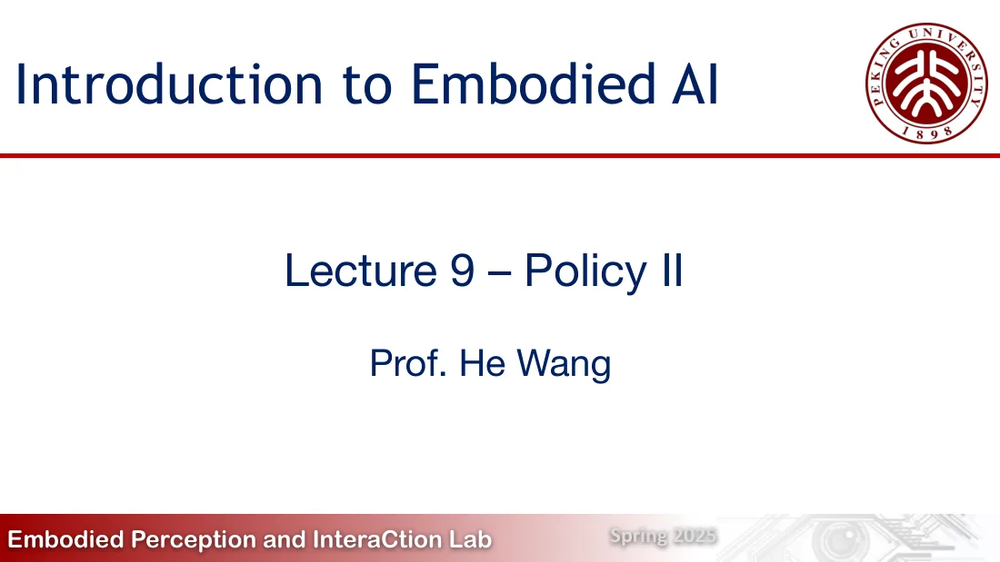
第9讲——策略 II
王鹤教授
具身感知与交互实验室｜2025年春季
Lecture 09 · PDF p2
Lecture 09 · PDF p3
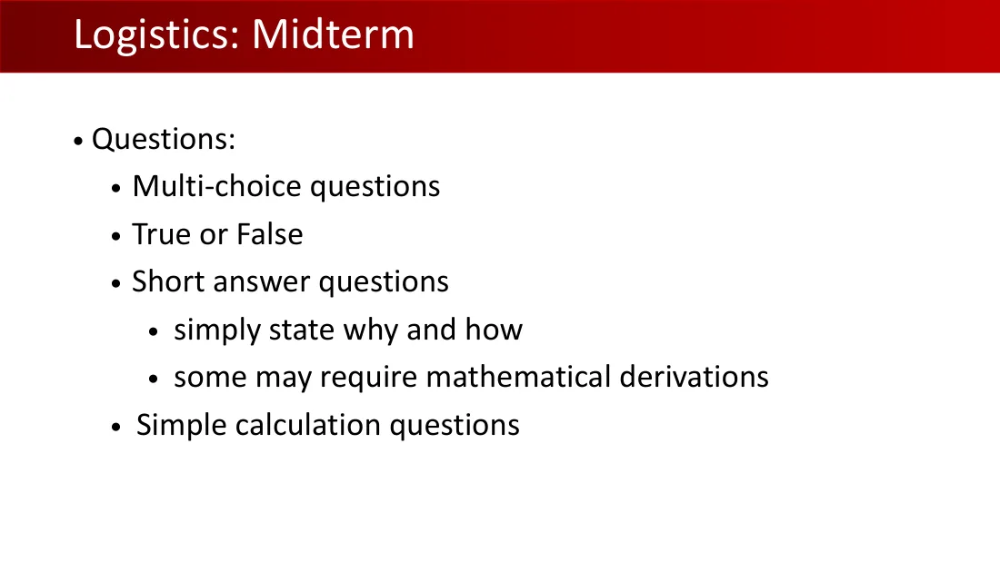
- 题型：
- 多项选择题。
- 判断题。
- 简答题。
- 简要陈述为什么和怎样。
- 部分题目可能需要数学推导。
- 简单计算题。
Lecture 09 · PDF p4
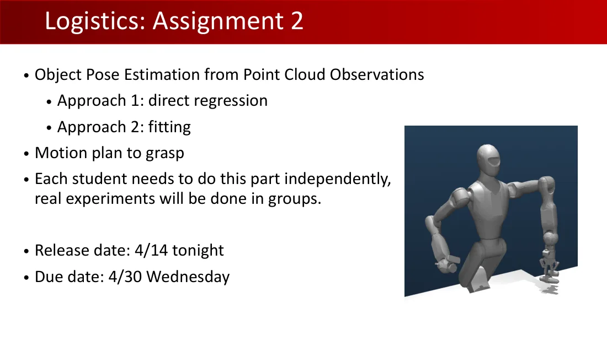
- 根据点云观测估计物体位姿。
- 方法1：直接回归。
- 方法2：拟合。
- 为抓取进行运动规划。
- 这一部分每位学生需要独立完成，真实实验分组完成。
- 发布时间：4月14日今晚。
- 截止时间：4月30日，星期三。
Lecture 09 · PDF p5
Lecture 09 · PDF p6
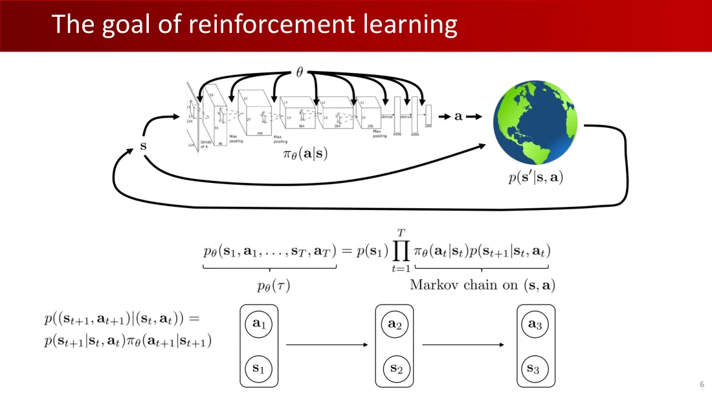
θ；状态s；动作a；πθ(a|s)；p(s′|s,a)。
$p_\theta(s_1,a_1,\ldots,s_T,a_T)=p(s_1)\prod_{t=1}^T\pi_\theta(a_t\mid s_t)p(s_{t+1}\mid s_t,a_t)=p_\theta(\tau)$。
关于(s,a)的马尔可夫链。
$p((s_{t+1},a_{t+1})\mid(s_t,a_t))=p(s_{t+1}\mid s_t,a_t)\pi_\theta(a_{t+1}\mid s_{t+1})$。
Lecture 09 · PDF p7
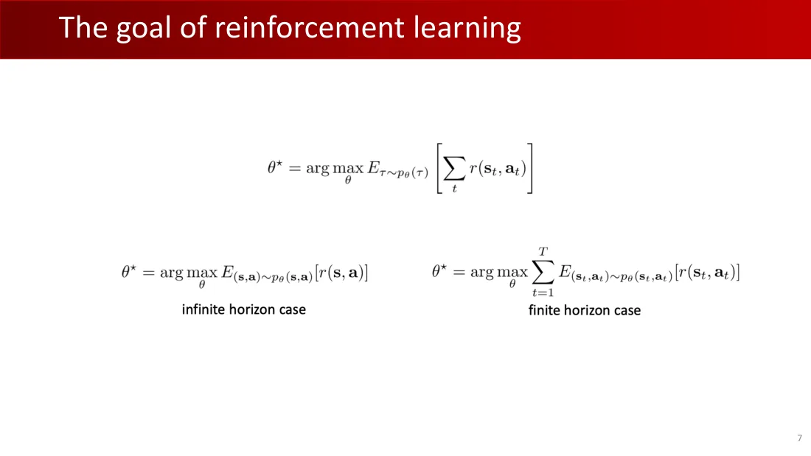
$\theta^*=\arg\max_\theta\mathbb E_{\tau\sim p_\theta(\tau)}[\sum_t r(s_t,a_t)]$。
$\theta^*=\arg\max_\theta\mathbb E_{(s,a)\sim p_\theta(s,a)}[r(s,a)]$。无限时域情形。
$\theta^*=\arg\max_\theta\sum_{t=1}^T\mathbb E_{(s_t,a_t)\sim p_\theta(s_t,a_t)}[r(s_t,a_t)]$。有限时域情形。
Lecture 09 · PDF p8
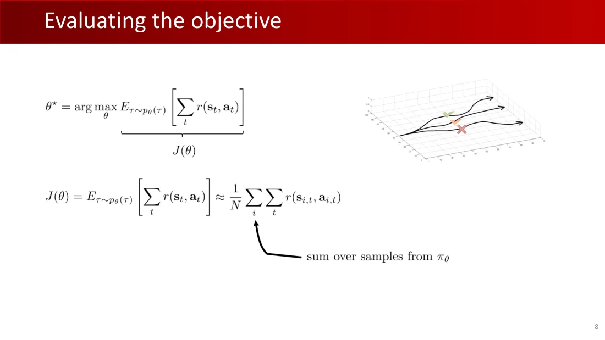
$\theta^*=\arg\max_\theta\mathbb E_{\tau\sim p_\theta(\tau)}[\sum_t r(s_t,a_t)]$。
J(θ)
$J(\theta)=\mathbb E_{\tau\sim p_\theta(\tau)}[\sum_t r(s_t,a_t)]\approx\frac1N\sum_i\sum_t r(s_{i,t},a_{i,t})$。
对来自πθ的样本求和。
Lecture 09 · PDF p9
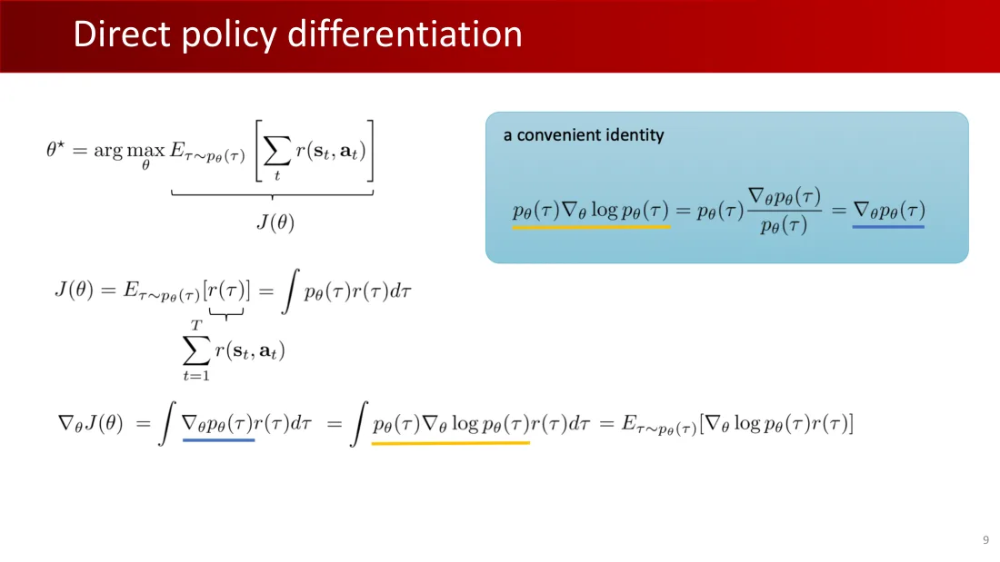
$\theta^*=\arg\max_\theta\mathbb E_{\tau\sim p_\theta(\tau)}[\sum_t r(s_t,a_t)]$。
J(θ)
$J(\theta)=\mathbb E_{\tau\sim p_\theta(\tau)}[r(\tau)]=\int p_\theta(\tau)r(\tau)d\tau$；$r(\tau)=\sum_{t=1}^Tr(s_t,a_t)$。
一个方便的恒等式
$p_\theta(\tau)\nabla_\theta\log p_\theta(\tau)=p_\theta(\tau)\frac{\nabla_\theta p_\theta(\tau)}{p_\theta(\tau)}=\nabla_\theta p_\theta(\tau)$。
$\nabla_\theta J(\theta)=\int\nabla_\theta p_\theta(\tau)r(\tau)d\tau=\int p_\theta(\tau)\nabla_\theta\log p_\theta(\tau)r(\tau)d\tau=\mathbb E_{\tau\sim p_\theta(\tau)}[\nabla_\theta\log p_\theta(\tau)r(\tau)]$。
Lecture 09 · PDF p10
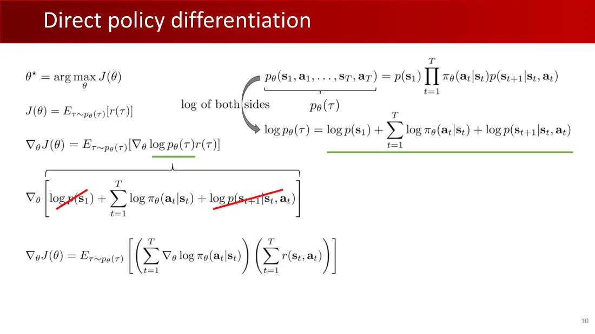
$\theta^*=\arg\max_\theta J(\theta)$；$J(\theta)=\mathbb E_{\tau\sim p_\theta(\tau)}[r(\tau)]$。
$\nabla_\theta J(\theta)=\mathbb E_{\tau\sim p_\theta(\tau)}[\nabla_\theta\log p_\theta(\tau)r(\tau)]$。
$p_\theta(s_1,a_1,\ldots,s_T,a_T)=p(s_1)\prod_{t=1}^T\pi_\theta(a_t\mid s_t)p(s_{t+1}\mid s_t,a_t)=p_\theta(\tau)$。
两边取对数：
$\log p_\theta(\tau)=\log p(s_1)+\sum_{t=1}^T[\log\pi_\theta(a_t\mid s_t)+\log p(s_{t+1}\mid s_t,a_t)]$。
$\nabla_\theta[\log p(s_1)+\sum_{t=1}^T\log\pi_\theta(a_t\mid s_t)+\log p(s_{t+1}\mid s_t,a_t)]$。
$\nabla_\theta J(\theta)=\mathbb E_{\tau\sim p_\theta(\tau)}[(\sum_{t=1}^T\nabla_\theta\log\pi_\theta(a_t\mid s_t))(\sum_{t=1}^T r(s_t,a_t))]$。
Lecture 09 · PDF p11
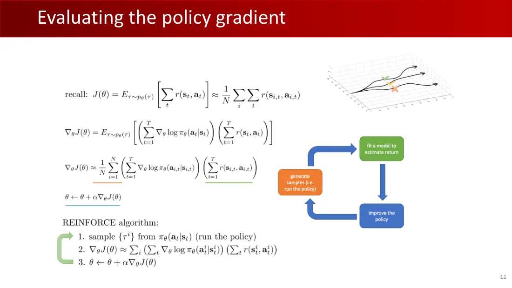
回顾：
$J(\theta)=\mathbb E_{\tau\sim p_\theta(\tau)}[\sum_t r(s_t,a_t)]\approx\frac1N\sum_i\sum_t r(s_{i,t},a_{i,t})$。
$\nabla_\theta J(\theta)=\mathbb E_{\tau\sim p_\theta(\tau)}[(\sum_{t=1}^T\nabla_\theta\log\pi_\theta(a_t\mid s_t))(\sum_{t=1}^T r(s_t,a_t))]$。
$\nabla_\theta J(\theta)\approx\frac1N\sum_{i=1}^N(\sum_{t=1}^T\nabla_\theta\log\pi_\theta(a_{i,t}\mid s_{i,t}))(\sum_{t=1}^T r(s_{i,t},a_{i,t}))$。
$\theta\leftarrow\theta+\alpha\nabla_\theta J(\theta)$。
生成样本（即执行策略） → 拟合模型以估计回报 → 改进策略。
REINFORCE算法
- 从$\pi_\theta(a_t\mid s_t)$采样$\{\tau^i\}$（执行该策略）。
- $\nabla_\theta J(\theta)\approx\frac1N\sum_{i=1}^N(\sum_{t=1}^T\nabla_\theta\log\pi_\theta(a_{i,t}\mid s_{i,t}))(\sum_{t=1}^T r(s_{i,t},a_{i,t}))$。
- $\theta\leftarrow\theta+\alpha\nabla_\theta J(\theta)$。
Lecture 09 · PDF p12
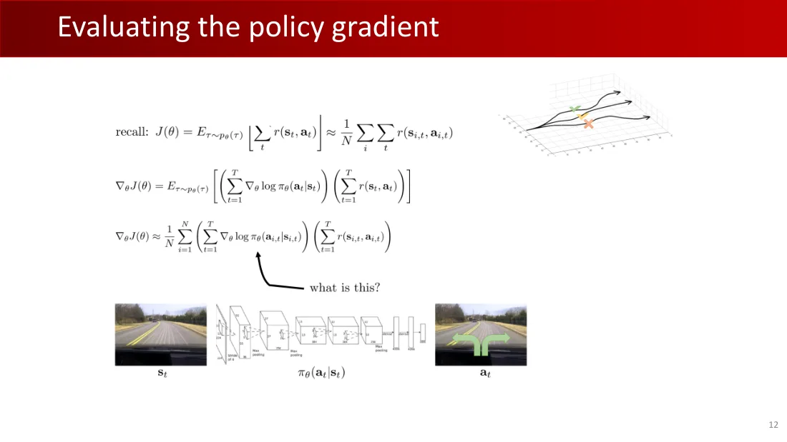
回顾：
$J(\theta)=\mathbb E_{\tau\sim p_\theta(\tau)}[\sum_t r(s_t,a_t)]\approx\frac1N\sum_i\sum_t r(s_{i,t},a_{i,t})$。
$\nabla_\theta J(\theta)=\mathbb E_{\tau\sim p_\theta(\tau)}[(\sum_{t=1}^T\nabla_\theta\log\pi_\theta(a_t\mid s_t))(\sum_{t=1}^T r(s_t,a_t))]$。
$\nabla_\theta J(\theta)\approx\frac1N\sum_{i=1}^N(\sum_{t=1}^T\nabla_\theta\log\pi_\theta(a_{i,t}\mid s_{i,t}))(\sum_{t=1}^T r(s_{i,t},a_{i,t}))$。
这是什么？
sₜ → πθ(aₜ|sₜ) → aₜ。
Lecture 09 · PDF p13
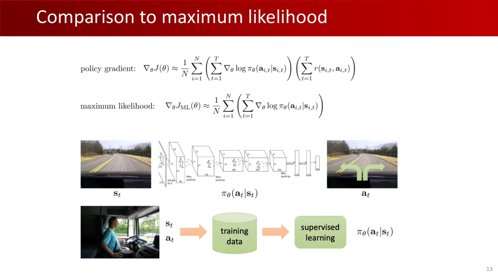
策略梯度：
$\nabla_\theta J(\theta)\approx\frac1N\sum_{i=1}^N(\sum_{t=1}^T\nabla_\theta\log\pi_\theta(a_{i,t}\mid s_{i,t}))(\sum_{t=1}^T r(s_{i,t},a_{i,t}))$。
最大似然：
$\nabla_\theta J_{ML}(\theta)\approx\frac1N\sum_{i=1}^N(\sum_{t=1}^T\nabla_\theta\log\pi_\theta(a_{i,t}\mid s_{i,t}))$。
sₜ、aₜ → 训练数据 → 监督学习 → πθ(aₜ|sₜ)。
Lecture 09 · PDF p14
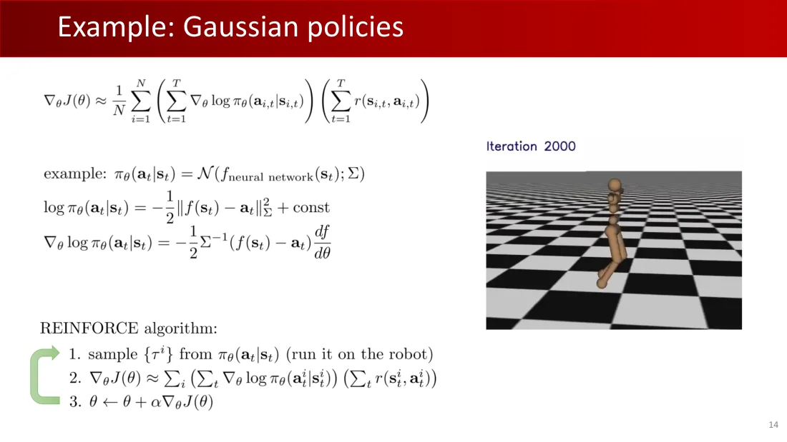
$\nabla_\theta J(\theta)\approx\frac1N\sum_{i=1}^N(\sum_{t=1}^T\nabla_\theta\log\pi_\theta(a_{i,t}\mid s_{i,t}))(\sum_{t=1}^T r(s_{i,t},a_{i,t}))$。
例：$\pi_\theta(a_t\mid s_t)=\mathcal N(f_{neural\ network}(s_t);\Sigma)$。
$\log\pi_\theta(a_t\mid s_t)=-\frac12\|f(s_t)-a_t\|_\Sigma^2+\text{常数}$。
$\nabla_\theta\log\pi_\theta(a_t\mid s_t)=-\frac12\Sigma^{-1}(f(s_t)-a_t)\frac{df}{d\theta}$。
第2000次迭代。
REINFORCE算法
- 从$\pi_\theta(a_t\mid s_t)$采样$\{\tau^i\}$（执行该策略）。
- $\nabla_\theta J(\theta)\approx\frac1N\sum_{i=1}^N(\sum_{t=1}^T\nabla_\theta\log\pi_\theta(a_{i,t}\mid s_{i,t}))(\sum_{t=1}^T r(s_{i,t},a_{i,t}))$。
- $\theta\leftarrow\theta+\alpha\nabla_\theta J(\theta)$。
Lecture 09 · PDF p15
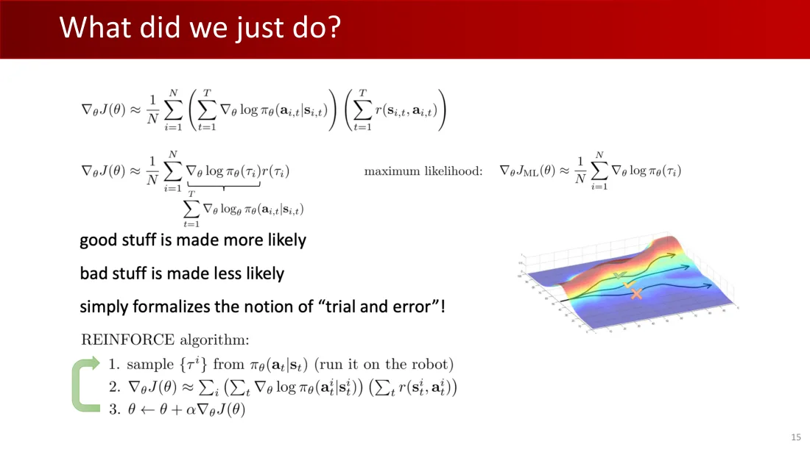
$\nabla_\theta J(\theta)\approx\frac1N\sum_{i=1}^N(\sum_{t=1}^T\nabla_\theta\log\pi_\theta(a_{i,t}\mid s_{i,t}))(\sum_{t=1}^T r(s_{i,t},a_{i,t}))$。
$\nabla_\theta J(\theta)\approx\frac1N\sum_{i=1}^N\nabla_\theta\log p_\theta(\tau)r(\tau)$。
$\nabla_\theta\log p_\theta(\tau)=\sum_{t=1}^T\nabla_\theta\log\pi_\theta(a_{i,t}\mid s_{i,t})$。
最大似然：$\nabla_\theta J_{ML}(\theta)\approx\frac1N\sum_{i=1}^N\nabla_\theta\log p_\theta(\tau)$。
让好行为更可能发生。让坏行为更不可能发生。
只是把“试错”的概念形式化！
REINFORCE算法
- 从$\pi_\theta(a_t\mid s_t)$采样$\{\tau^i\}$（执行该策略）。
- $\nabla_\theta J(\theta)\approx\frac1N\sum_{i=1}^N(\sum_{t=1}^T\nabla_\theta\log\pi_\theta(a_{i,t}\mid s_{i,t}))(\sum_{t=1}^T r(s_{i,t},a_{i,t}))$。
- $\theta\leftarrow\theta+\alpha\nabla_\theta J(\theta)$。
Lecture 09 · PDF p16
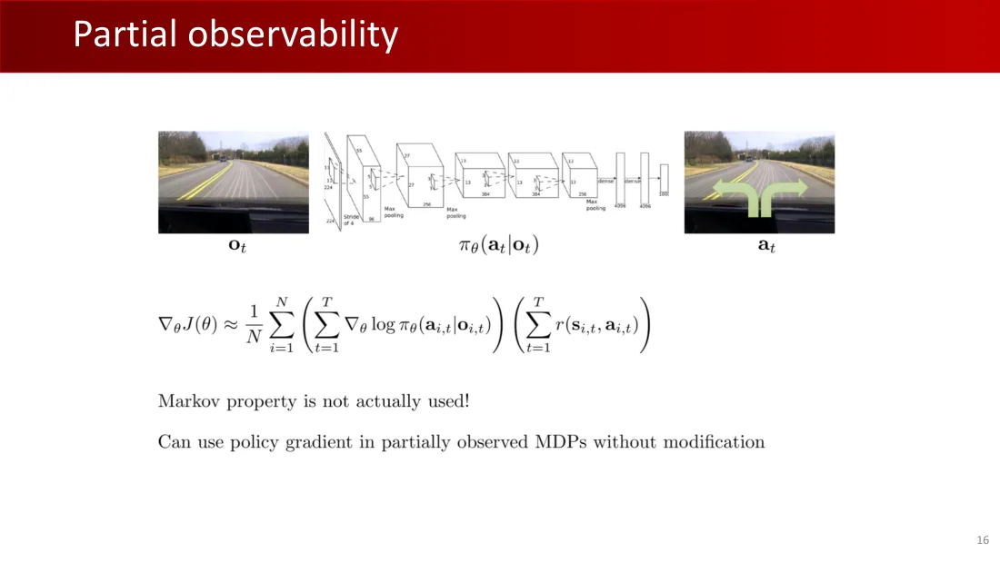
oₜ → πθ(aₜ|oₜ) → aₜ。
$\nabla_\theta J(\theta)\approx\frac1N\sum_{i=1}^N(\sum_{t=1}^T\nabla_\theta\log\pi_\theta(a_{i,t}\mid o_{i,t}))(\sum_{t=1}^T r(o_{i,t},a_{i,t}))$。
实际上并未使用马尔可夫性质！
无需修改，即可在部分可观测MDP中使用策略梯度。
Lecture 09 · PDF p17
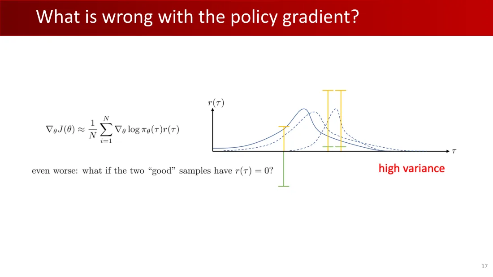
$\nabla_\theta J(\theta)\approx\frac1N\sum_{i=1}^N\nabla_\theta\log p_\theta(\tau)r(\tau)$。
r(τ)；τ。
更糟：如果两个“好”样本的r(τ)=0呢？
高方差。
Lecture 09 · PDF p18
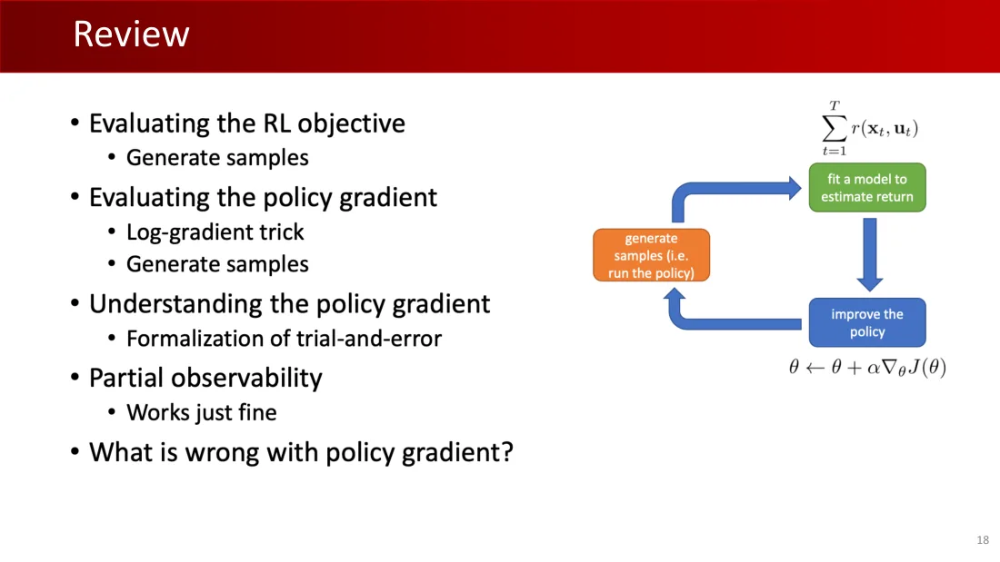
- 评估强化学习目标。
- 生成样本。
- 评估策略梯度。
- 对数梯度技巧。
- 生成样本。
- 理解策略梯度。
- 试错的形式化。
- 部分可观测性。
- 同样有效。
- 策略梯度有什么问题？
生成样本（即执行策略） → 拟合模型以估计回报 → 改进策略。
$\sum_{t=1}^Tr(x_t,u_t)$；$\theta\leftarrow\theta+\alpha\nabla_\theta J(\theta)$。
Lecture 09 · PDF p19
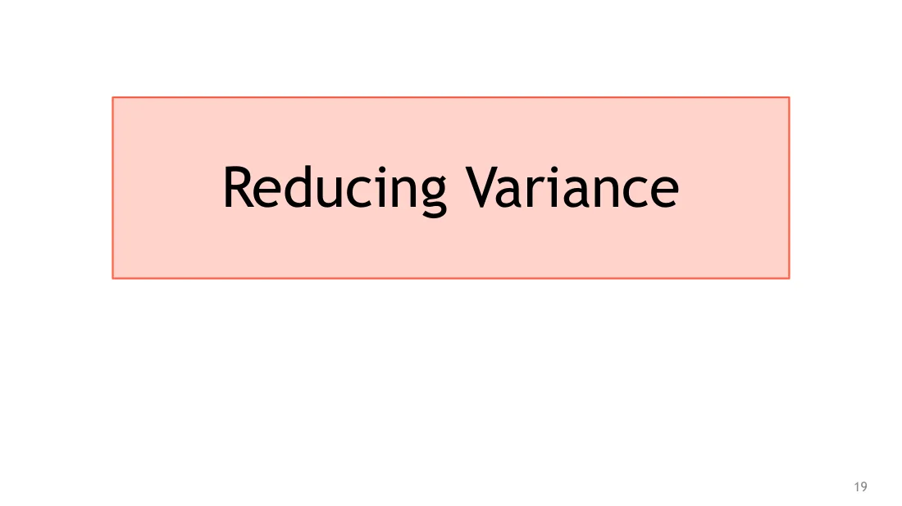
Lecture 09 · PDF p20
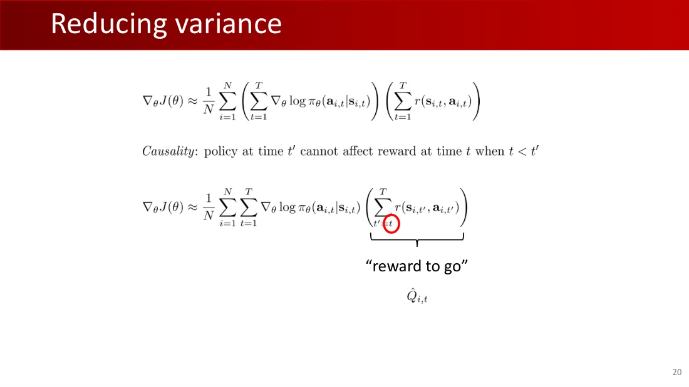
$\nabla_\theta J(\theta)\approx\frac1N\sum_{i=1}^N(\sum_{t=1}^T\nabla_\theta\log\pi_\theta(a_{i,t}\mid s_{i,t}))(\sum_{t=1}^T r(s_{i,t},a_{i,t}))$。
因果性：时刻t′的策略不能影响时刻t的奖励（t $\nabla_\theta J(\theta)\approx\frac1N\sum_{i=1}^N\sum_{t=1}^T\nabla_\theta\log\pi_\theta(a_{i,t}\mid s_{i,t})\left(\sum_{t\prime=t}^Tr(s_{i,t\prime},a_{i,t\prime})\right)$。 “从当前时刻开始的回报”。 $\hat Q_{i,t}=\sum_{t\prime=t}^Tr(s_{i,t\prime},a_{i,t\prime})$。
Lecture 09 · PDF p21
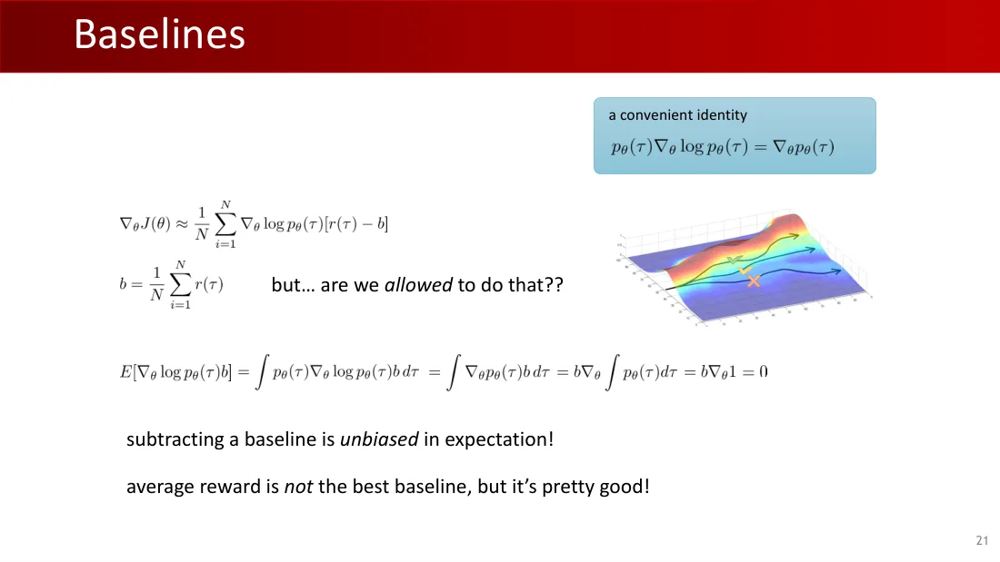
一个方便的恒等式
$p_\theta(\tau)\nabla_\theta\log p_\theta(\tau)=\nabla_\theta p_\theta(\tau)$。
基线
$\nabla_\theta J(\theta)\approx\frac1N\sum_{i=1}^N\nabla_\theta\log p_\theta(\tau_i)(r(\tau_i)-b)$；$b=\frac1N\sum_i r(\tau_i)$。
但是……允许这样做吗？？
$\mathbb E[\nabla_\theta\log p_\theta(\tau)b]=\int p_\theta(\tau)\nabla_\theta\log p_\theta(\tau)b\,d\tau=\int\nabla_\theta p_\theta(\tau)b\,d\tau=b\nabla_\theta\int p_\theta(\tau)d\tau=b\nabla_\theta1=0$。
减去一个基线，在期望意义上是无偏的！
平均奖励并不是最好的基线，但已经相当不错！
Lecture 09 · PDF p22
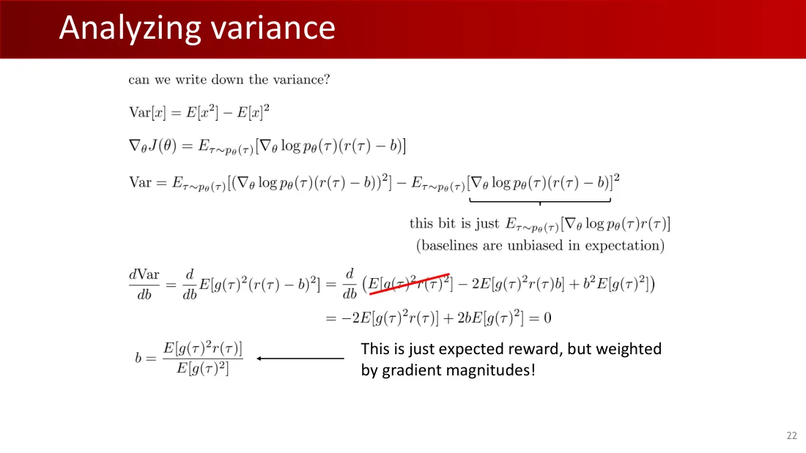
$\operatorname{Var}[x]=\mathbb E[x^2]-\mathbb E[x]^2$。
$\nabla_\theta J(\theta)=\mathbb E_{\tau\sim p_\theta}[\nabla_\theta\log p_\theta(\tau)(r(\tau)-b)]$。
$\operatorname{Var}[\nabla_\theta\log p_\theta(\tau)(r(\tau)-b)]=\mathbb E[(\nabla_\theta\log p_\theta(\tau)(r(\tau)-b))^2]-\mathbb E[\nabla_\theta\log p_\theta(\tau)(r(\tau)-b)]^2$。
后一项就是$\mathbb E[\nabla_\theta\log p_\theta(\tau)r(\tau)]^2$。
令$g(\tau)=\nabla_\theta\log p_\theta(\tau)$：$\frac{d\operatorname{Var}}{db}=\frac d{db}\mathbb E[g(\tau)^2(r(\tau)-b)^2]=\frac d{db}(\mathbb E[g^2r^2]-2\mathbb E[g^2r]b+b^2\mathbb E[g^2])=-2\mathbb E[g^2r]+2b\mathbb E[g^2]=0$。
$b=\frac{\mathbb E[g(\tau)^2r(\tau)]}{\mathbb E[g(\tau)^2]}$。
这就是期望奖励，但用梯度的大小加权！
Lecture 09 · PDF p23
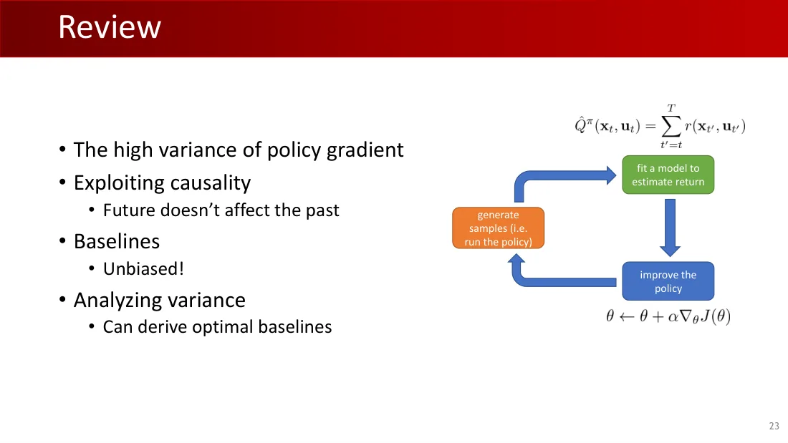
- 策略梯度的高方差。
- 利用因果性。
- 未来不会影响过去。
- 基线。
- 无偏！
- 分析方差。
- 可以推导最优基线。
生成样本（即执行策略） → 拟合模型以估计回报 → 改进策略。
$\nabla_\theta J(\theta)\approx\frac1N\sum_{i=1}^N\sum_{t=1}^T\nabla_\theta\log\pi_\theta(a_{i,t}\mid s_{i,t})\left(\sum_{t\prime=t}^Tr(s_{i,t\prime},a_{i,t\prime})\right)$。
$\hat Q_{i,t}=\sum_{t\prime=t}^Tr(s_{i,t\prime},a_{i,t\prime})$。
Lecture 09 · PDF p24
Lecture 09 · PDF p25
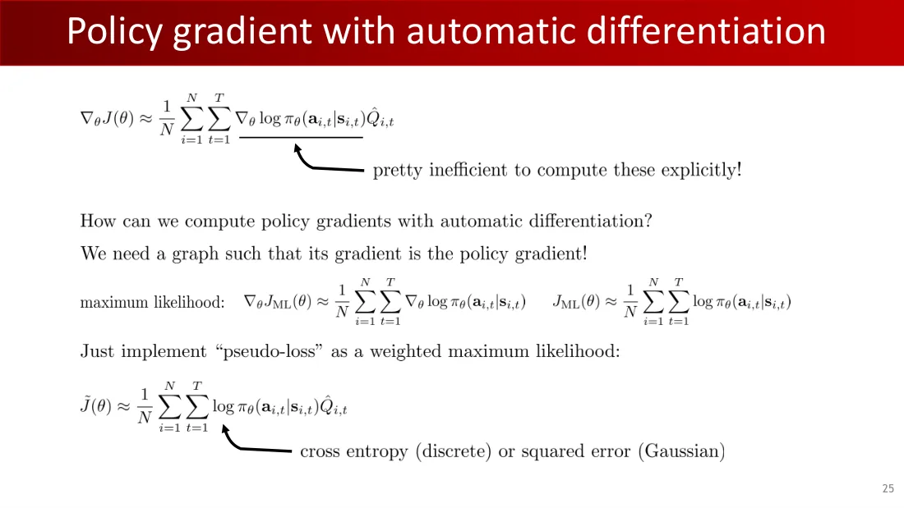
$\nabla_\theta J(\theta)\approx\frac1N\sum_{i=1}^N\sum_{t=1}^T\nabla_\theta\log\pi_\theta(a_{i,t}\mid s_{i,t})\hat Q_{i,t}$。
显式计算这些梯度效率很低！
需要构造一个计算图，使其梯度等于策略梯度。
最大似然：
$\nabla_\theta J_{ML}(\theta)\approx\frac1N\sum_{i=1}^N(\sum_{t=1}^T\nabla_\theta\log\pi_\theta(a_{i,t}\mid s_{i,t}))$。
$J_{ML}(\theta)=\frac1N\sum_{i=1}^N\sum_{t=1}^T\log\pi_\theta(a_{i,t}\mid s_{i,t})$。
“伪损失”：
$\tilde J(\theta)=\frac1N\sum_{i=1}^N\sum_{t=1}^T\log\pi_\theta(a_{i,t}\mid s_{i,t})\hat Q_{i,t}$。
离散动作使用交叉熵；高斯策略使用平方误差。
Lecture 09 · PDF p26
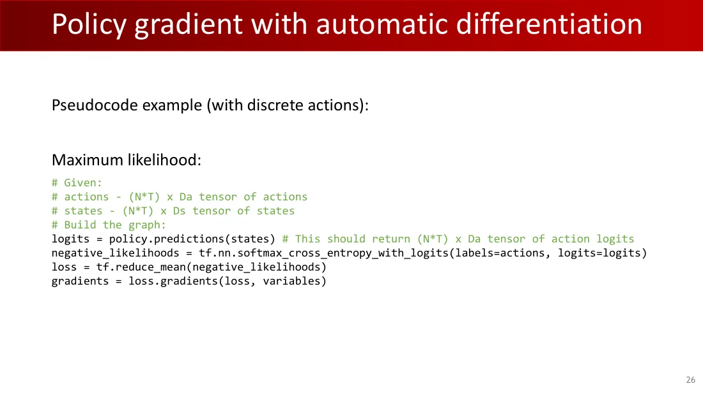
伪代码示例（离散动作）：
最大似然
# 给定：
# actions：形状为 (N*T) × Da 的动作张量
# states：形状为 (N*T) × Ds 的状态张量
# 构建计算图：
logits = policy.predictions(states) # 应返回形状为 (N*T) × Da 的动作 logits 张量
negative_likelihoods = tf.nn.softmax_cross_entropy_with_logits(labels=actions, logits=logits)
loss = tf.reduce_mean(negative_likelihoods)
gradients = loss.gradients(loss, variables)Lecture 09 · PDF p27
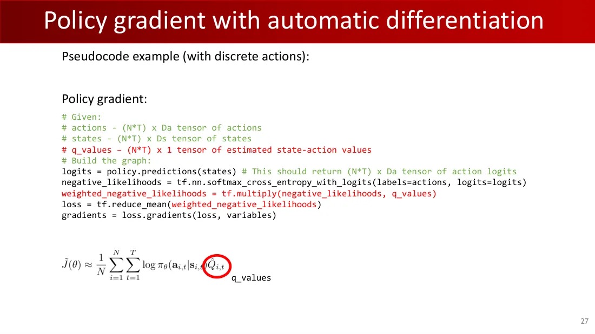
伪代码示例（离散动作）：
策略梯度
# 给定：
# actions：形状为 (N*T) × Da 的动作张量
# states：形状为 (N*T) × Ds 的状态张量
# q_values：形状为 (N*T) × 1 的估计状态—动作价值张量
# 构建计算图：
logits = policy.predictions(states) # 应返回形状为 (N*T) × Da 的动作 logits 张量
negative_likelihoods = tf.nn.softmax_cross_entropy_with_logits(labels=actions, logits=logits)
weighted_negative_likelihoods = tf.multiply(negative_likelihoods, q_values)
loss = tf.reduce_mean(weighted_negative_likelihoods)
gradients = loss.gradients(loss, variables)$\tilde J(\theta)=\frac1N\sum_{i=1}^N\sum_{t=1}^T\log\pi_\theta(a_{i,t}\mid s_{i,t})\hat Q_{i,t}$。
q_values：估计的状态—动作价值。
Lecture 09 · PDF p28
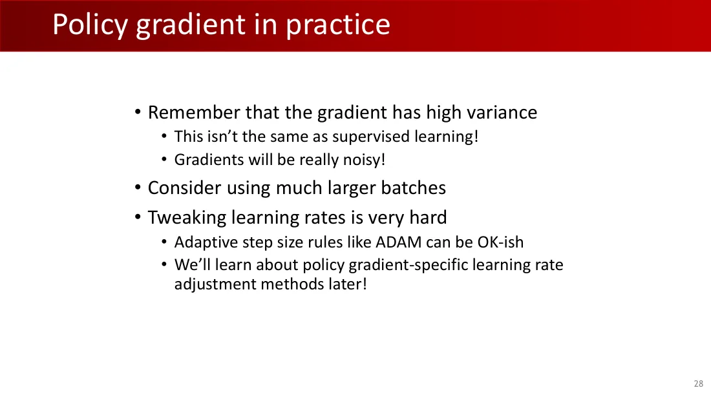
- 记住：梯度的方差很高。
- 这与监督学习不同！
- 梯度会非常嘈杂！
- 考虑使用大得多的批次。
- 调整学习率非常困难。
- ADAM等自适应步长规则可以取得尚可的效果。
- 稍后会学习专门针对策略梯度的学习率调整方法！
Lecture 09 · PDF p29
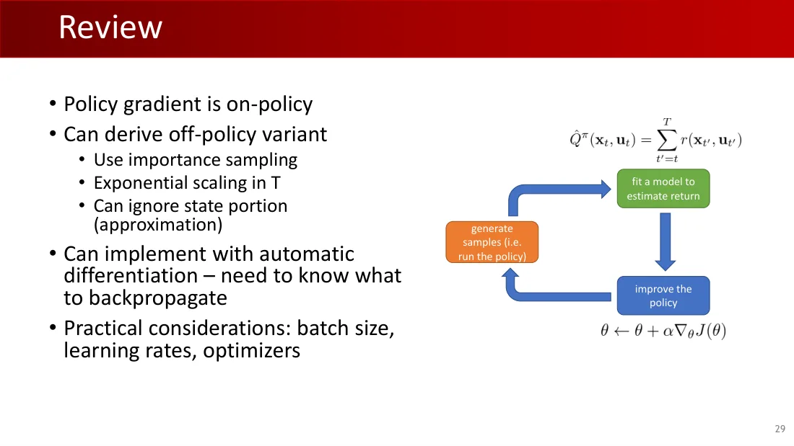
- 策略梯度是同策略方法。
- 可以推导异策略版本。
- 使用重要性采样。
- 随T呈指数增长。
- 可以忽略状态部分（近似）。
- 可以用自动微分实现——需要知道应对什么做反向传播。
- 实践方面的考虑：批次大小、学习率、优化器。
生成样本（即执行策略） → 拟合模型以估计回报 → 改进策略。
Lecture 09 · PDF p30
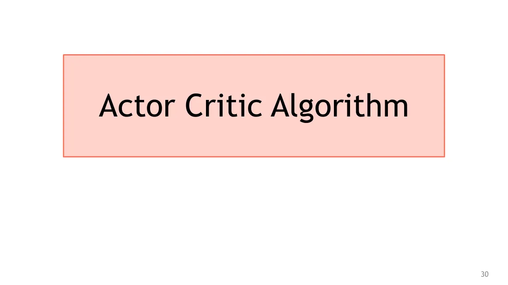
Lecture 09 · PDF p31
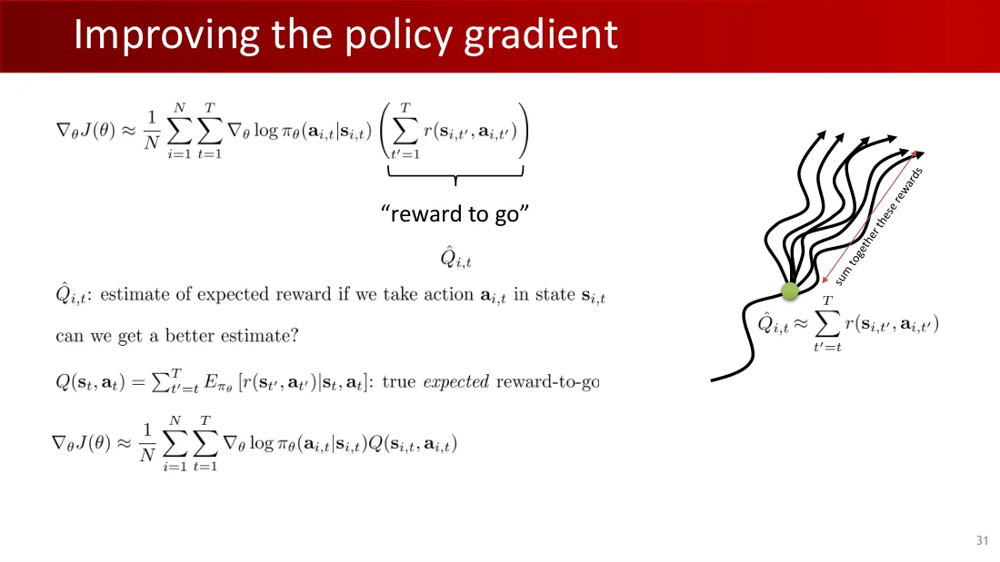
$\nabla_\theta J(\theta)\approx\frac1N\sum_{i=1}^N\sum_{t=1}^T\nabla_\theta\log\pi_\theta(a_{i,t}\mid s_{i,t})\left(\sum_{t\prime=1}^Tr(s_{i,t\prime},a_{i,t\prime})\right)$。
“从当前时刻开始的回报”：Q̂ᵢ,ₜ。
Q̂ᵢ,ₜ：在状态sᵢ,ₜ采取动作aᵢ,ₜ时的期望奖励估计。
能得到更好的估计吗？
$Q^\pi(s_t,a_t)=\sum_{t\prime=t}^T\mathbb E_\pi[r(s_{t\prime},a_{t\prime})\mid s_t,a_t]$。
真正的期望未来回报。
$\nabla_\theta J(\theta)\approx\frac1N\sum_{i=1}^N\sum_{t=1}^T\nabla_\theta\log\pi_\theta(a_{i,t}\mid s_{i,t})Q(s_{i,t},a_{i,t})$。
将这些奖励加在一起。
$\hat Q_{i,t}\approx\sum_{t\prime=t}^Tr(s_{i,t\prime},a_{i,t\prime})$。
Lecture 09 · PDF p32
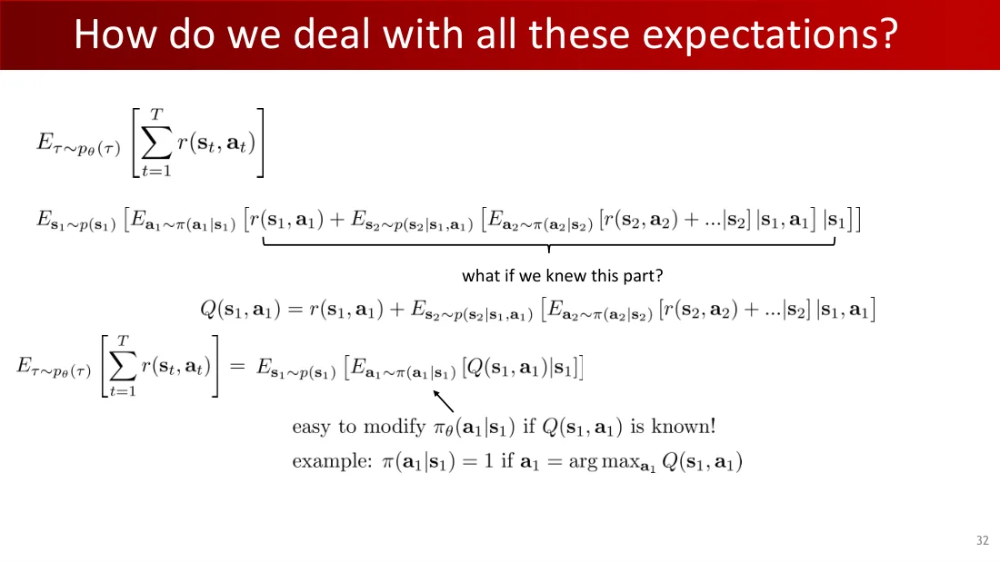
$\mathbb E_{\tau\sim p_\theta(\tau)}[\sum_{t=1}^Tr(s_t,a_t)]=\mathbb E_{s_1\sim p(s_1)}[\mathbb E_{a_1\sim\pi(a_1\mid s_1)}[r(s_1,a_1)+\mathbb E_{s_2\sim p(s_2\mid s_1,a_1)}[\mathbb E_{a_2\sim\pi(a_2\mid s_2)}[r(s_2,a_2)+\cdots\mid s_2]\mid s_1,a_1]\mid s_1]]$。
如果我们知道这一部分呢？
$Q(s_1,a_1)=r(s_1,a_1)+\mathbb E_{s_2\sim p(s_2\mid s_1,a_1)}[\mathbb E_{a_2\sim\pi(a_2\mid s_2)}[r(s_2,a_2)+\cdots\mid s_2]\mid s_1,a_1]$。
$\mathbb E_{\tau\sim p_\theta(\tau)}[\sum_{t=1}^Tr(s_t,a_t)]=\mathbb E_{s_1\sim p(s_1)}[\mathbb E_{a_1\sim\pi(a_1\mid s_1)}[Q(s_1,a_1)\mid s_1]]$。
如果已知Q，就很容易改变π！
例如：$\pi(a_1\mid s_1)=1$，当$a_1=\arg\max_{a_1}Q(s_1,a_1)$。
Lecture 09 · PDF p33
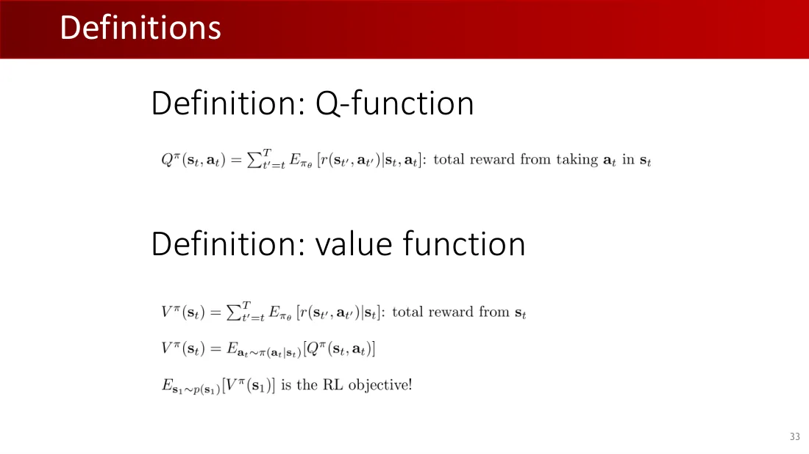
定义：Q函数
$Q^\pi(s_t,a_t)=\sum_{t\prime=t}^T\mathbb E_\pi[r(s_{t\prime},a_{t\prime})\mid s_t,a_t]$。
在sₜ采取动作aₜ之后的总奖励。
定义：价值函数
$V^\pi(s_t)=\sum_{t\prime=t}^T\mathbb E_\pi[r(s_{t\prime},a_{t\prime})\mid s_t]=\mathbb E_{a_t\sim\pi(a_t\mid s_t)}[Q^\pi(s_t,a_t)]$。
从sₜ开始的总奖励。
$\mathbb E_{s_1\sim p(s_1)}[V^\pi(s_1)]$：强化学习目标。
Lecture 09 · PDF p34
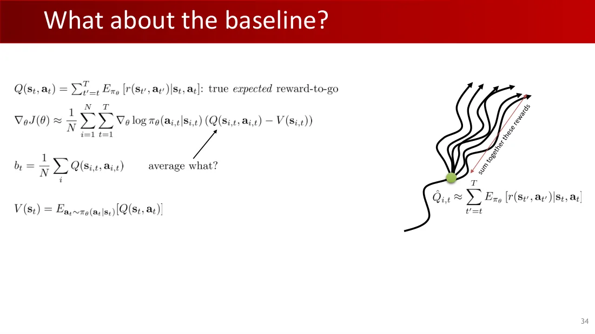
$Q^\pi(s_t,a_t)=\sum_{t\prime=t}^T\mathbb E_\pi[r(s_{t\prime},a_{t\prime})\mid s_t,a_t]$。
真正的期望未来回报。
$\nabla_\theta J(\theta)\approx\frac1N\sum_{i=1}^N\sum_{t=1}^T\nabla_\theta\log\pi_\theta(a_{i,t}\mid s_{i,t})(Q(s_{i,t},a_{i,t})-V(s_{i,t}))$。
$b_t=\frac1N\sum_iQ(s_{i,t},a_{i,t})$。
对什么求平均？
$V^\pi(s_t)=\sum_{t\prime=t}^T\mathbb E_\pi[r(s_{t\prime},a_{t\prime})\mid s_t]=\mathbb E_{a_t\sim\pi(a_t\mid s_t)}[Q^\pi(s_t,a_t)]$。
期望奖励之和。
Lecture 09 · PDF p35
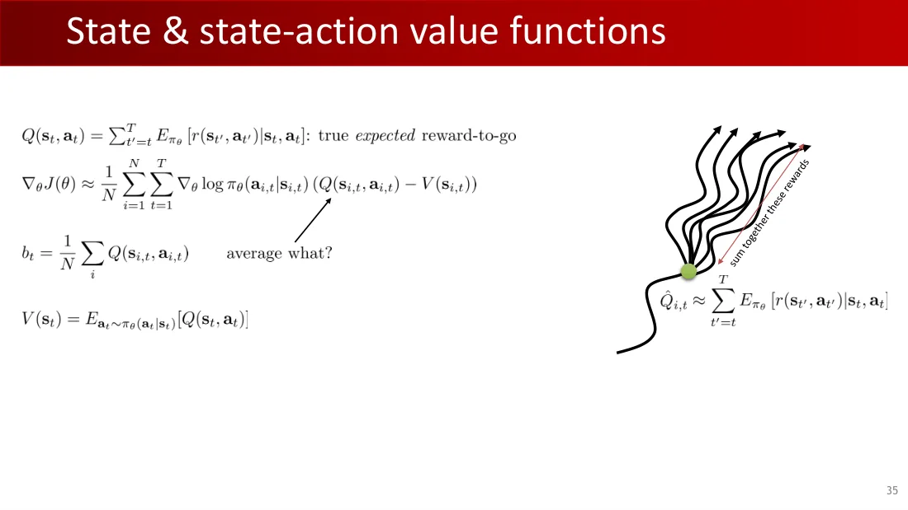
$Q^\pi(s_t,a_t)=\sum_{t\prime=t}^T\mathbb E_\pi[r(s_{t\prime},a_{t\prime})\mid s_t,a_t]$。
真正的期望未来回报。
$\nabla_\theta J(\theta)\approx\frac1N\sum_{i=1}^N\sum_{t=1}^T\nabla_\theta\log\pi_\theta(a_{i,t}\mid s_{i,t})(Q(s_{i,t},a_{i,t})-V(s_{i,t}))$。
$b_t=\frac1N\sum_iQ(s_{i,t},a_{i,t})$。
对什么求平均？
$V^\pi(s_t)=\sum_{t\prime=t}^T\mathbb E_\pi[r(s_{t\prime},a_{t\prime})\mid s_t]=\mathbb E_{a_t\sim\pi(a_t\mid s_t)}[Q^\pi(s_t,a_t)]$。
期望奖励之和。
Lecture 09 · PDF p36
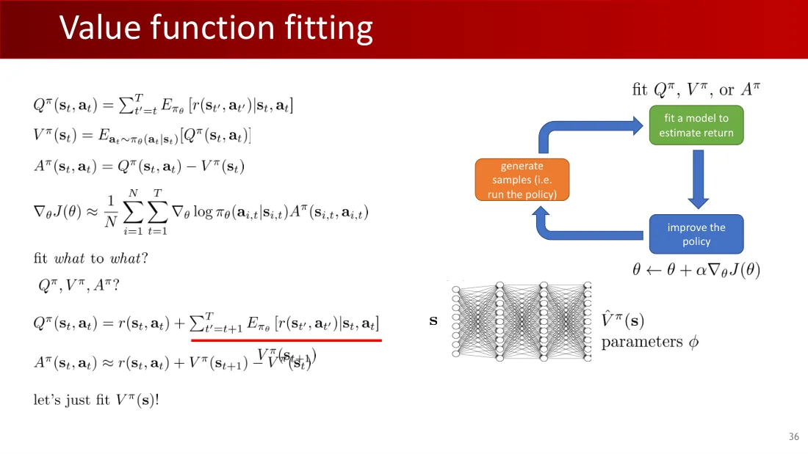
$Q^\pi(s_t,a_t)=\sum_{t\prime=t}^T\mathbb E_\pi[r(s_{t\prime},a_{t\prime})\mid s_t,a_t]$。
$V^\pi(s_t)=\sum_{t\prime=t}^T\mathbb E_\pi[r(s_{t\prime},a_{t\prime})\mid s_t]=\mathbb E_{a_t\sim\pi(a_t\mid s_t)}[Q^\pi(s_t,a_t)]$。
$A^\pi(s_t,a_t)=Q^\pi(s_t,a_t)-V^\pi(s_t)$。
$\nabla_\theta J(\theta)\approx\frac1N\sum_i\sum_t\nabla_\theta\log\pi_\theta(a_{i,t}\mid s_{i,t})A^\pi(s_{i,t},a_{i,t})$。
拟合什么？Q、V，还是A？
$Q^\pi(s_t,a_t)=r(s_t,a_t)+\sum_{t\prime=t+1}^T\mathbb E_\pi[r(s_{t\prime},a_{t\prime})\mid s_t,a_t]$。
$A^\pi(s_t,a_t)\approx r(s_t,a_t)+V^\pi(s_{t+1})-V^\pi(s_t)$。
只拟合Vᵠ(s)就好。
s → V̂πφ(s)。参数：φ。
生成样本（即执行策略） → 拟合Q、V或A以估计回报 → 改进策略。
Lecture 09 · PDF p37
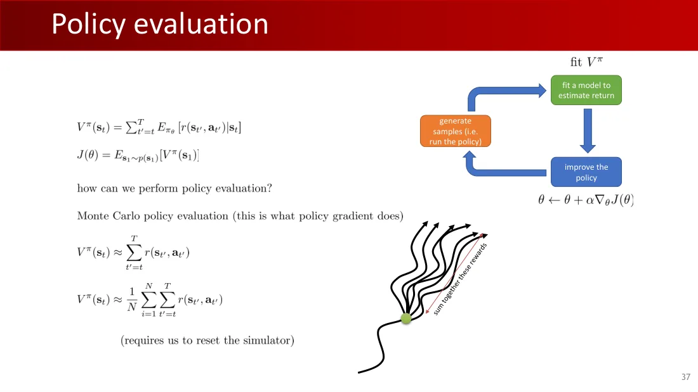
$V^\pi(s_t)=\sum_{t\prime=t}^T\mathbb E_\pi[r(s_{t\prime},a_{t\prime})\mid s_t]=\mathbb E_{a_t\sim\pi(a_t\mid s_t)}[Q^\pi(s_t,a_t)]$。
$\mathbb E_{s_1\sim p(s_1)}[V^\pi(s_1)]$。
策略评估
如何评估策略？
蒙特卡罗方法：这就是策略梯度正在做的。
$V^\pi(s_t)\approx\sum_{t\prime=t}^Tr(s_{t\prime},a_{t\prime})$。
$V^\pi(s_t)\approx\frac1N\sum_{i=1}^N\sum_{t\prime=t}^Tr(s_{i,t\prime},a_{i,t\prime})$。
需要能够重置模拟器。
生成样本（即执行策略） → 拟合模型以估计回报 → 改进策略。
Lecture 09 · PDF p38
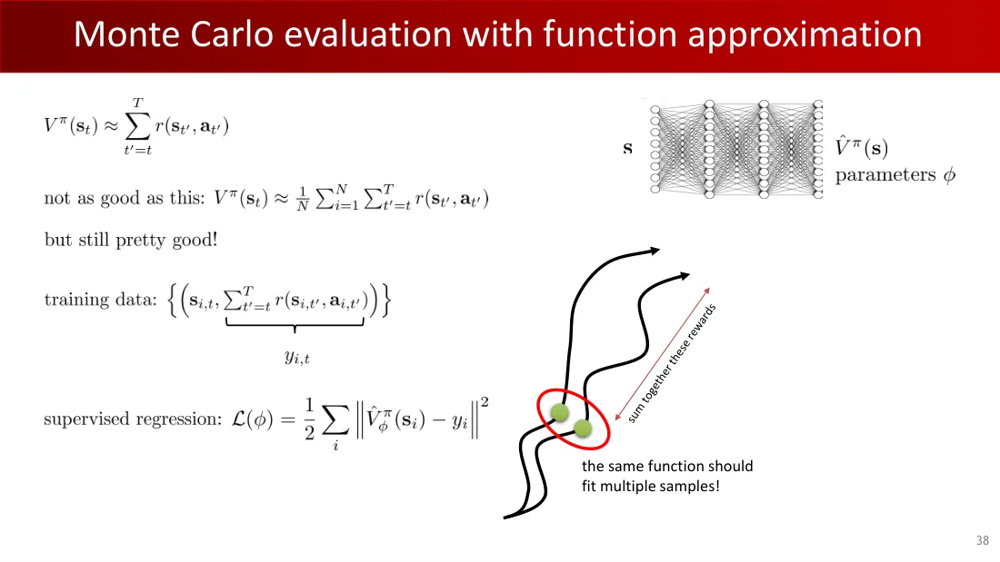
$V^\pi(s_t)\approx\sum_{t\prime=t}^Tr(s_{t\prime},a_{t\prime})$。
不如这个估计：
$V^\pi(s_t)\approx\frac1N\sum_{i=1}^N\sum_{t\prime=t}^Tr(s_{i,t\prime},a_{i,t\prime})$。
但仍相当不错！
训练数据：$\{(s_{i,t},\sum_{t\prime=t}^Tr(s_{i,t\prime},a_{i,t\prime}))\}$；目标$y_{i,t}$。
监督回归：
$L(\phi)=\frac12\sum_i\|\hat V^\pi_\phi(s_i)-y_i\|^2$。
s → V̂πφ(s)。参数：φ。
将这些奖励加在一起。
同一个函数应当拟合多个样本！
Lecture 09 · PDF p39
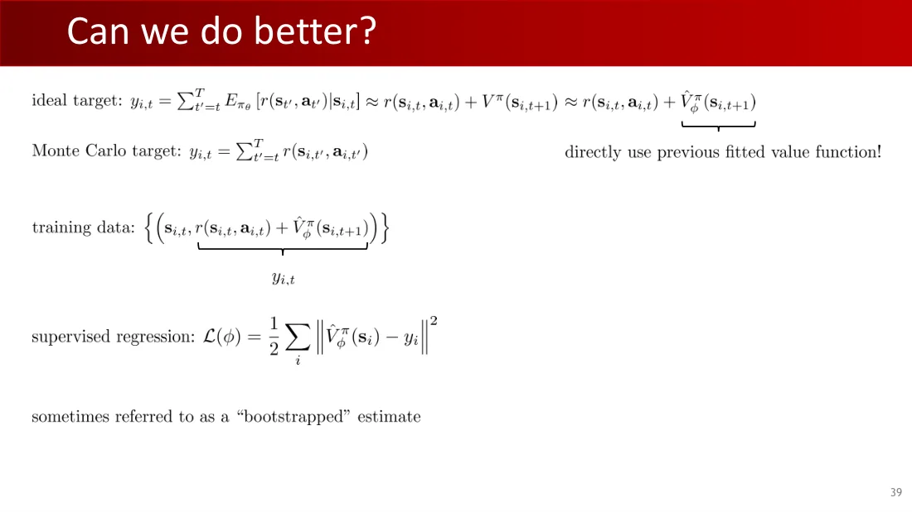
$y_{i,t}=\sum_{t\prime=t}^Tr(s_{i,t\prime},a_{i,t\prime})$。
$y_{i,t}=\sum_{t\prime=t}^T\mathbb E_{\pi_\theta}[r(s_{t\prime},a_{t\prime})\mid s_{i,t}]\approx r(s_{i,t},a_{i,t})+V^\pi(s_{i,t+1})\approx r(s_{i,t},a_{i,t})+\hat V^\pi_\phi(s_{i,t+1})$。
理想目标；蒙特卡罗目标；直接使用先前拟合的价值函数！
训练数据：$\{(s_{i,t},r(s_{i,t},a_{i,t})+\hat V^\pi_\phi(s_{i,t+1}))\}$；$y_{i,t}$。
$L(\phi)=\frac12\sum_i\|\hat V^\pi_\phi(s_i)-y_i\|^2$。
“自举”估计。
Lecture 09 · PDF p40
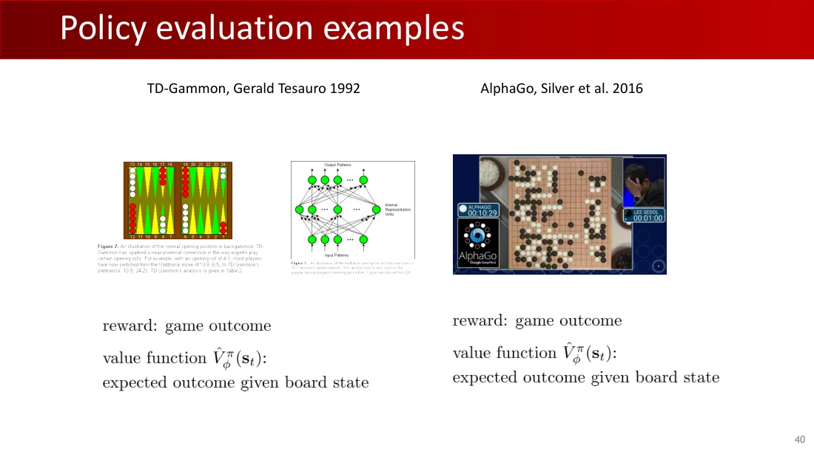
TD-Gammon，Gerald Tesauro，1992年。
AlphaGo，Silver等，2016年。
Lecture 09 · PDF p41
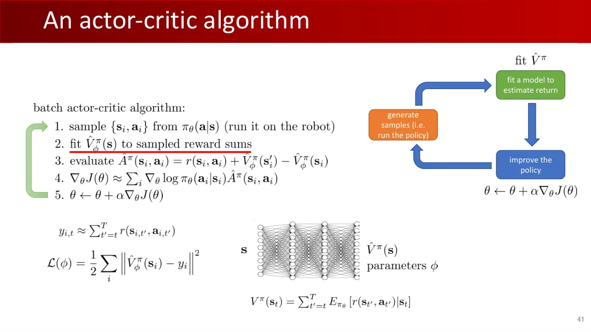
行动者—评价者算法
- 用当前策略$\pi_\theta(a\mid s)$采样$\{s_i,a_i\}$。
- 用采样得到的奖励和拟合$\hat V^\pi_\phi(s)$。
- 评估$\hat A^\pi(s_i,a_i)=r(s_i,a_i)+\hat V^\pi_\phi(s_i\prime)-\hat V^\pi_\phi(s_i)$。
- 评估$\nabla_\theta J(\theta)\approx\sum_i\nabla_\theta\log\pi_\theta(a_i\mid s_i)\hat A^\pi(s_i,a_i)$。
- 更新$\theta\leftarrow\theta+\alpha\nabla_\theta J(\theta)$。
$y_{i,t}=\sum_{t\prime=t}^Tr(s_{i,t\prime},a_{i,t\prime})$。
$L(\phi)=\frac12\sum_i\|\hat V^\pi_\phi(s_i)-y_i\|^2$。
$V^\pi(s_t)=\sum_{t\prime=t}^T\mathbb E_\pi[r(s_{t\prime},a_{t\prime})\mid s_t]=\mathbb E_{a_t\sim\pi(a_t\mid s_t)}[Q^\pi(s_t,a_t)]$。
s → V̂πφ(s)。参数：φ。
生成样本（即执行策略） → 拟合模型以估计回报 → 改进策略。
Lecture 09 · PDF p42
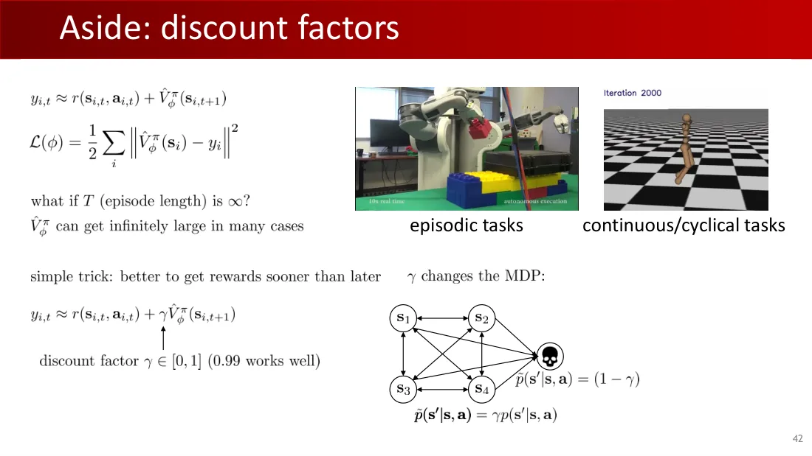
$y_{i,t}\approx r(s_{i,t},a_{i,t})+\hat V^\pi_\phi(s_{i,t+1})$。
$L(\phi)=\frac12\sum_i\|\hat V^\pi_\phi(s_i)-y_i\|^2$。
如果T（回合长度）趋于无穷大，V可能变成无穷大！
回合式任务；连续／循环任务。第2000次迭代。
简单技巧：让较早获得的奖励更好。
$y_{i,t}\approx r(s_{i,t},a_{i,t})+\gamma\hat V^\pi_\phi(s_{i,t+1})$；$\gamma\in[0,1]$，0.99效果不错。
γ改变了MDP：$p\prime(s\prime\mid s,a)=\gamma p(s\prime\mid s,a)$；“死亡”概率为$1-\gamma$。
Lecture 09 · PDF p43
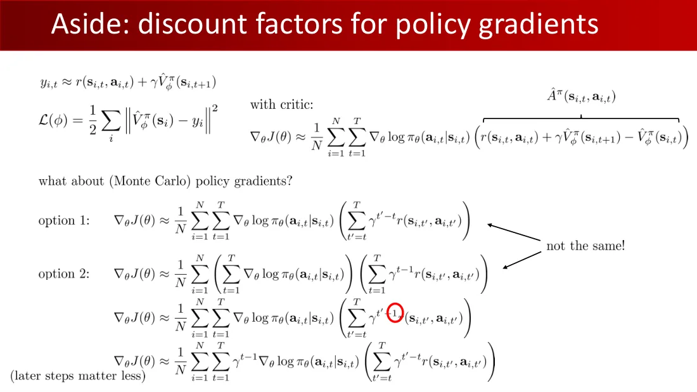
$y_{i,t}\approx r(s_{i,t},a_{i,t})+\gamma\hat V^\pi_\phi(s_{i,t+1})$。
$L(\phi)=\frac12\sum_i\|\hat V^\pi_\phi(s_i)-y_i\|^2$。
使用评价者：
$\nabla_\theta J(\theta)\approx\frac1N\sum_i\sum_t\nabla_\theta\log\pi_\theta(a_{i,t}\mid s_{i,t})(r(s_{i,t},a_{i,t})+\gamma\hat V^\pi_\phi(s_{i,t+1})-\hat V^\pi_\phi(s_{i,t}))$。
Âπ(sᵢ,ₜ,aᵢ,ₜ)。
（蒙特卡罗）策略梯度呢？
选项1
$\nabla_\theta J(\theta)\approx\frac1N\sum_i\sum_t\nabla_\theta\log\pi_\theta(a_{i,t}\mid s_{i,t})\left(\sum_{t\prime=t}^T\gamma^{t\prime-t}r(s_{i,t\prime},a_{i,t\prime})\right)$。
并不相同！
选项2
$\nabla_\theta J(\theta)\approx\frac1N\sum_i(\sum_t\nabla_\theta\log\pi_\theta(a_{i,t}\mid s_{i,t}))(\sum_{t\prime=1}^T\gamma^{t\prime-1}r(s_{i,t\prime},a_{i,t\prime}))$。
$\nabla_\theta J(\theta)\approx\frac1N\sum_i\sum_t\nabla_\theta\log\pi_\theta(a_{i,t}\mid s_{i,t})\left(\sum_{t\prime=t}^T\gamma^{t\prime-1}r(s_{i,t\prime},a_{i,t\prime})\right)$。
$\nabla_\theta J(\theta)\approx\frac1N\sum_i\sum_t\gamma^{t-1}\nabla_\theta\log\pi_\theta(a_{i,t}\mid s_{i,t})(\sum_{t\prime=t}^T\gamma^{t\prime-t}r(s_{i,t\prime},a_{i,t\prime}))$。
后面的步骤较不重要。
Lecture 09 · PDF p44
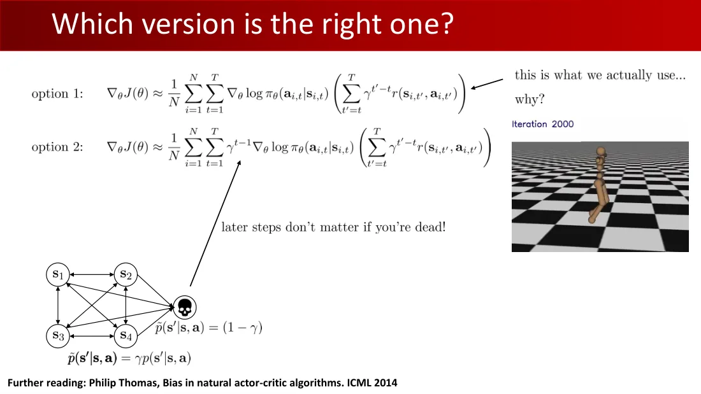
选项1
$\nabla_\theta J(\theta)\approx\frac1N\sum_i\sum_t\nabla_\theta\log\pi_\theta(a_{i,t}\mid s_{i,t})\left(\sum_{t\prime=t}^T\gamma^{t\prime-t}r(s_{i,t\prime},a_{i,t\prime})\right)$。
选项2
$\nabla_\theta J(\theta)\approx\frac1N\sum_i\sum_t\nabla_\theta\log\pi_\theta(a_{i,t}\mid s_{i,t})\left(\sum_{t\prime=t}^T\gamma^{t\prime-1}r(s_{i,t\prime},a_{i,t\prime})\right)$。
我们将使用这个版本。为什么？
后面的步骤不重要，因为机器人可能已经“死亡”。
γ改变了MDP：$p\prime(s\prime\mid s,a)=\gamma p(s\prime\mid s,a)$；“死亡”概率为$1-\gamma$。
第2000次迭代。
进一步阅读：Philip Thomas，《自然行动者—评价者算法中的偏差》（Bias in natural actor-critic algorithms），ICML 2014。
Lecture 09 · PDF p45
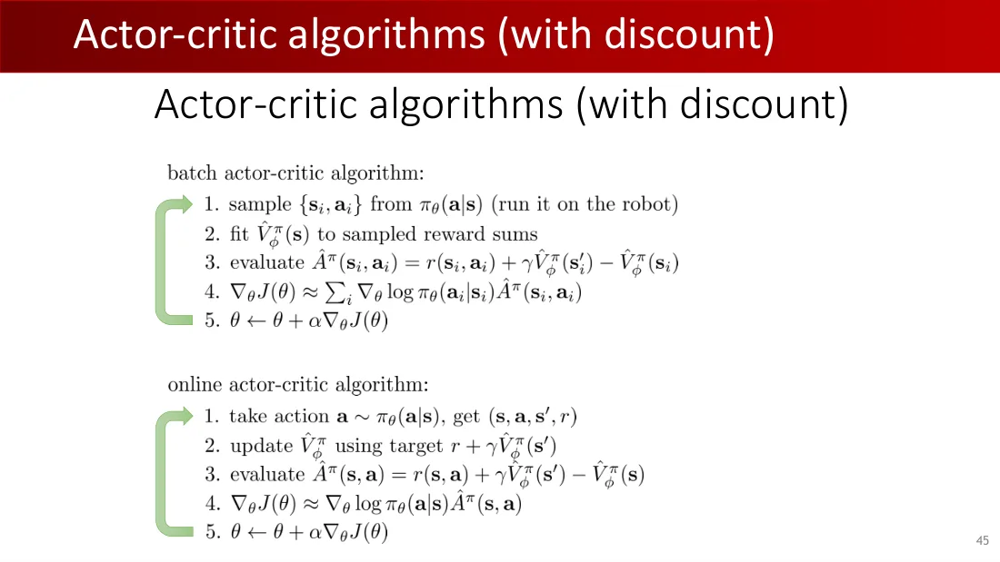
批次式行动者—评价者算法（带折扣）
- 用当前策略$\pi_\theta(a\mid s)$采样$\{s_i,a_i\}$。
- 用采样得到的奖励和拟合$\hat V^\pi_\phi(s)$。
- 评估$\hat A^\pi(s_i,a_i)=r(s_i,a_i)+\gamma\hat V^\pi_\phi(s_i\prime)-\hat V^\pi_\phi(s_i)$。
- 评估$\nabla_\theta J(\theta)\approx\sum_i\nabla_\theta\log\pi_\theta(a_i\mid s_i)\hat A^\pi(s_i,a_i)$。
- 更新$\theta\leftarrow\theta+\alpha\nabla_\theta J(\theta)$。
在线行动者—评价者算法（带折扣）
- 采样动作$a\sim\pi_\theta(a\mid s)$，得到$(s,a,s\prime,r)$。
- 更新$\hat V^\pi_\phi$，使用目标$y=r+ \gamma\hat V^\pi_\phi(s\prime)$。
- 评估$\hat A^\pi(s,a)=r+ \gamma\hat V^\pi_\phi(s\prime)-\hat V^\pi_\phi(s)$。
- 评估$\nabla_\theta J(\theta)\approx\nabla_\theta\log\pi_\theta(a\mid s)\hat A^\pi(s,a)$。
- 更新$\theta\leftarrow\theta+\alpha\nabla_\theta J(\theta)$。
Lecture 09 · PDF p46
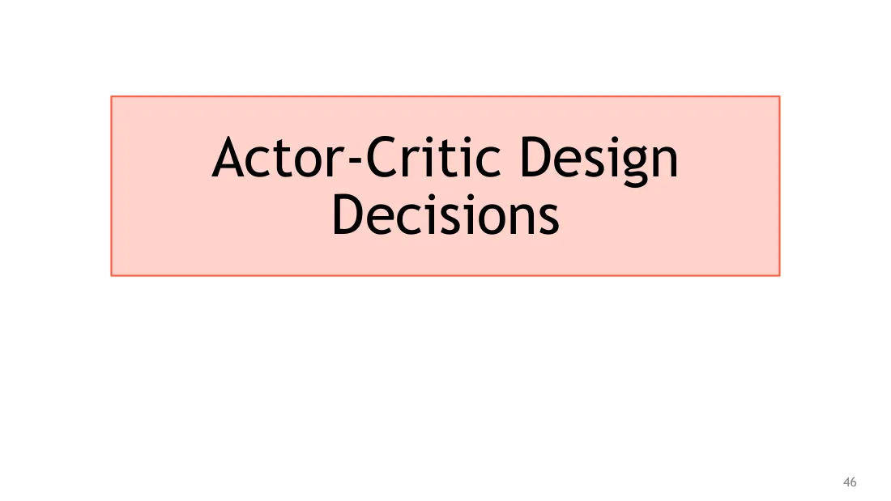
Lecture 09 · PDF p47
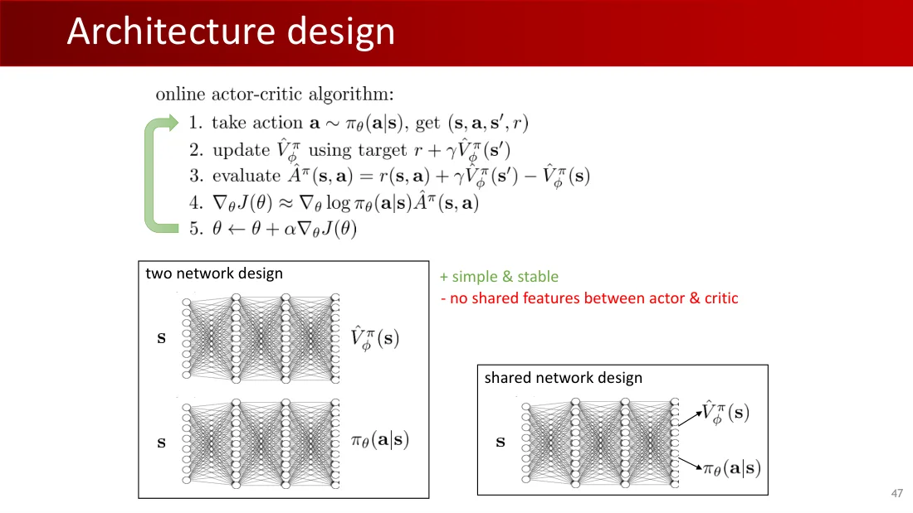
- 采样动作$a\sim\pi_\theta(a\mid s)$，得到$(s,a,s\prime,r)$。
- 更新$\hat V^\pi_\phi$，使用目标$y=r+ \gamma\hat V^\pi_\phi(s\prime)$。
- 评估$\hat A^\pi(s,a)=r+ \gamma\hat V^\pi_\phi(s\prime)-\hat V^\pi_\phi(s)$。
- 评估$\nabla_\theta J(\theta)\approx\nabla_\theta\log\pi_\theta(a\mid s)\hat A^\pi(s,a)$。
- 更新$\theta\leftarrow\theta+\alpha\nabla_\theta J(\theta)$。
两个网络的设计
s → πθ(a|s)；s → V̂πφ(s)。
- 优点：简单、稳定。
- 缺点：行动者与评价者不共享特征。
共享网络的设计
s → 共享网络 → πθ(a|s)、V̂πφ(s)。
Lecture 09 · PDF p48
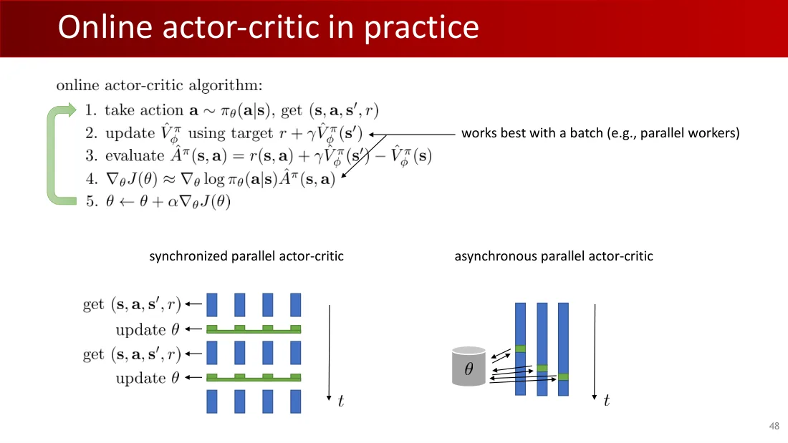
- 采样动作$a\sim\pi_\theta(a\mid s)$，得到$(s,a,s\prime,r)$。
- 更新$\hat V^\pi_\phi$，使用目标$y=r+ \gamma\hat V^\pi_\phi(s\prime)$。
- 评估$\hat A^\pi(s,a)=r+ \gamma\hat V^\pi_\phi(s\prime)-\hat V^\pi_\phi(s)$。
- 评估$\nabla_\theta J(\theta)\approx\nabla_\theta\log\pi_\theta(a\mid s)\hat A^\pi(s,a)$。
- 更新$\theta\leftarrow\theta+\alpha\nabla_\theta J(\theta)$。
使用批次效果最好（例如并行工作进程）。
同步并行行动者—评价者
工作进程1、2、3；获取θ，更新θ；时间。
异步并行行动者—评价者
工作进程1、2、3；获取θ，更新θ；时间。
Lecture 09 · PDF p49
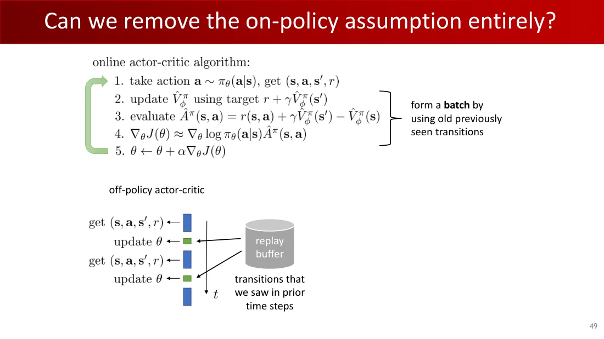
- 采样动作$a\sim\pi_\theta(a\mid s)$，得到$(s,a,s\prime,r)$。
- 更新$\hat V^\pi_\phi$，使用目标$y=r+ \gamma\hat V^\pi_\phi(s\prime)$。
- 评估$\hat A^\pi(s,a)=r+ \gamma\hat V^\pi_\phi(s\prime)-\hat V^\pi_\phi(s)$。
- 评估$\nabla_\theta J(\theta)\approx\nabla_\theta\log\pi_\theta(a\mid s)\hat A^\pi(s,a)$。
- 更新$\theta\leftarrow\theta+\alpha\nabla_\theta J(\theta)$。
如果把旧的转移组成一个批次呢？
异策略
获取样本。储存到回放缓冲区。使用前面步骤产生的样本。
Lecture 09 · PDF p50
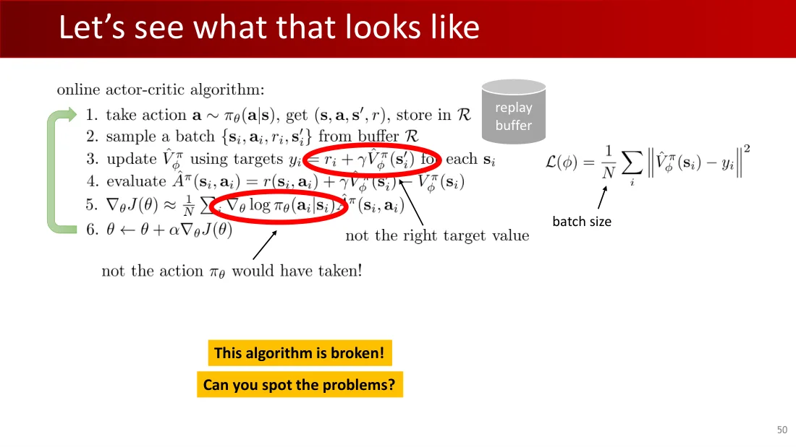
- 采样动作$a\sim\pi_\theta(a\mid s)$，得到$(s,a,s\prime,r)$，储存在回放缓冲区。
- 从回放缓冲区采样一批$(s_i,a_i,s_i\prime,r_i)$。
- 更新$\hat V^\pi_\phi$，目标$y_i=r_i+\gamma\hat V^\pi_\phi(s_i\prime)$。
- 评估$\hat A^\pi(s_i,a_i)=r_i+\gamma\hat V^\pi_\phi(s_i\prime)-\hat V^\pi_\phi(s_i)$。
- 评估$\nabla_\theta J(\theta)\approx\frac1N\sum_i\nabla_\theta\log\pi_\theta(a_i\mid s_i)\hat A^\pi(s_i,a_i)$。
- 更新$\theta\leftarrow\theta+\alpha\nabla_\theta J(\theta)$。
回放缓冲区。
$L(\phi)=\frac1N\sum_i(\hat V^\pi_\phi(s_i)-y_i)^2$；$y_i=r_i+\gamma\hat V^\pi_\phi(s_i\prime)$。
错了！
策略不是产生这些动作的策略！
Lecture 09 · PDF p51
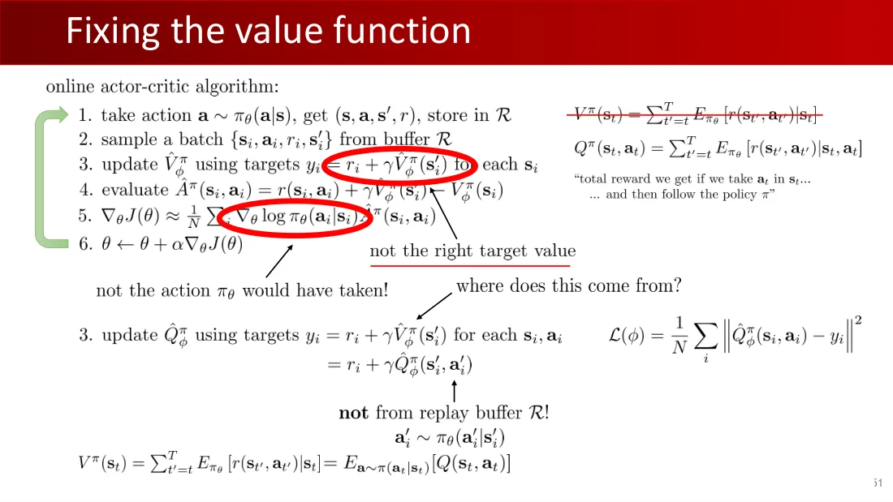
- 采样动作$a\sim\pi_\theta(a\mid s)$，得到$(s,a,s\prime,r)$，储存在回放缓冲区。
- 从回放缓冲区采样一批$(s_i,a_i,s_i\prime,r_i)$。
- 更新$\hat V^\pi_\phi$，目标$y_i=r_i+\gamma\hat V^\pi_\phi(s_i\prime)$。
- 评估$\hat A^\pi(s_i,a_i)=r_i+\gamma\hat V^\pi_\phi(s_i\prime)-\hat V^\pi_\phi(s_i)$。
- 评估$\nabla_\theta J(\theta)\approx\frac1N\sum_i\nabla_\theta\log\pi_\theta(a_i\mid s_i)\hat A^\pi(s_i,a_i)$。
- 更新$\theta\leftarrow\theta+\alpha\nabla_\theta J(\theta)$。
$V^\pi(s_t)=\sum_{t\prime=t}^T\mathbb E_\pi[r(s_{t\prime},a_{t\prime})\mid s_t]=\mathbb E_{a_t\sim\pi(a_t\mid s_t)}[Q^\pi(s_t,a_t)]$。
总奖励，从状态s开始。
错了！
$Q^\pi(s_t,a_t)=\sum_{t\prime=t}^T\mathbb E_\pi[r(s_{t\prime},a_{t\prime})\mid s_t,a_t]$。
采取动作a之后遵循策略π的总奖励。
$V^\pi(s)=\mathbb E_{a\sim\pi(a\mid s)}[Q^\pi(s,a)]$。
更新Q函数。
$y_i=r_i+\gamma V^\pi(s_i\prime)=r_i+\gamma Q^\pi(s_i\prime,a_i\prime)$，$a_i\prime\sim\pi_\theta(a_i\prime\mid s_i\prime)$。
从当前策略采样动作，不用缓冲区中的动作。
$L(\phi)=\frac1N\sum_i(\hat Q^\pi_\phi(s_i,a_i)-y_i)^2$；$y_i=r_i+\gamma\hat Q^\pi_\phi(s_i\prime,a_i\prime)$。
不是πθ会采取的动作！不是正确的目标值。这来自哪里？不来自回放缓冲区R！
Lecture 09 · PDF p52
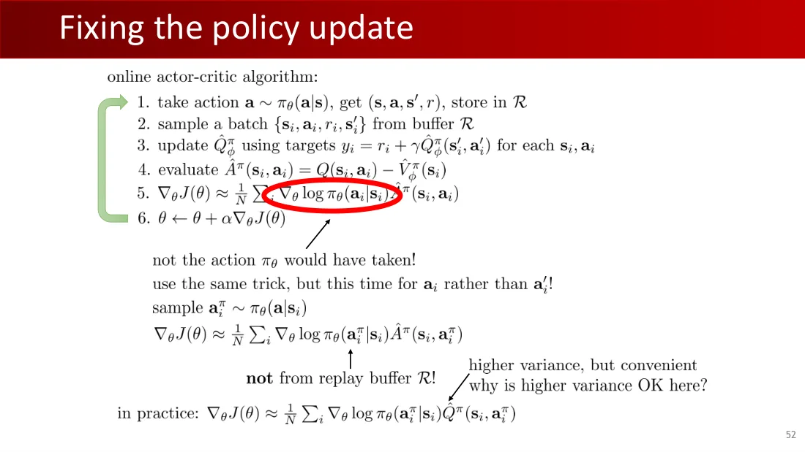
- 采样动作$a\sim\pi_\theta(a\mid s)$，得到$(s,a,s\prime,r)$，储存在回放缓冲区。
- 从回放缓冲区采样一批$(s_i,a_i,s_i\prime,r_i)$。
- 更新$\hat Q^\pi_\phi$，目标$y_i=r_i+\gamma\hat Q^\pi_\phi(s_i\prime,a_i\prime)$，其中$a_i\prime\sim\pi_\theta(a_i\prime\mid s_i\prime)$。
- 评估$\hat A^\pi(s_i,a_i)=\hat Q^\pi_\phi(s_i,a_i)-\hat V^\pi_\phi(s_i)$。
- 评估$\nabla_\theta J(\theta)\approx\frac1N\sum_i\nabla_\theta\log\pi_\theta(a_i\mid s_i)\hat A^\pi(s_i,a_i)$。
- 更新$\theta\leftarrow\theta+\alpha\nabla_\theta J(\theta)$。
不是当前策略产生的动作。
现在对aᵢ使用同样的技巧，而不是对aᵢ′！
采样$a_i\prime\prime\sim\pi_\theta(a_i\prime\prime\mid s_i)$。
$\nabla_\theta J(\theta)\approx\frac1N\sum_i\nabla_\theta\log\pi_\theta(a_i\prime\prime\mid s_i)\hat A^\pi(s_i,a_i\prime\prime)$。
从当前策略采样，不使用缓冲区中的动作。
方差更高，但更方便。为什么这里较高的方差可以接受？
实践中：$\nabla_\theta J(\theta)\approx\frac1N\sum_i\nabla_\theta\log\pi_\theta(a_i\prime\prime\mid s_i)\hat Q^\pi_\phi(s_i,a_i\prime\prime)$。
Lecture 09 · PDF p53
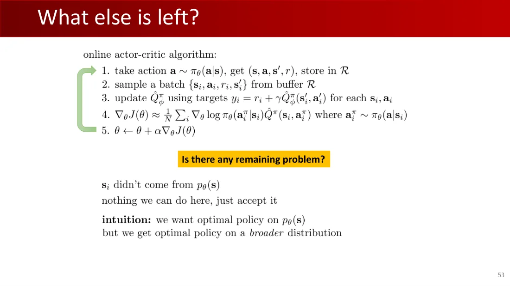
- 采样动作$a\sim\pi_\theta(a\mid s)$，得到$(s,a,s\prime,r)$，储存在回放缓冲区。
- 从回放缓冲区采样一批$(s_i,a_i,s_i\prime,r_i)$。
- 更新$\hat Q^\pi_\phi$，目标$y_i=r_i+\gamma\hat Q^\pi_\phi(s_i\prime,a_i\prime)$，其中$a_i\prime\sim\pi_\theta(a_i\prime\mid s_i\prime)$。
- 采样$a_i\prime\prime\sim\pi_\theta(a_i\prime\prime\mid s_i)$。评估$\nabla_\theta J(\theta)\approx\frac1N\sum_i\nabla_\theta\log\pi_\theta(a_i\prime\prime\mid s_i)\hat Q^\pi_\phi(s_i,a_i\prime\prime)$。
- 更新$\theta\leftarrow\theta+\alpha\nabla_\theta J(\theta)$。
还有任何问题吗？
sᵢ并不来自pθ(s)。
对此我们无能为力，接受它吧。
直觉：我们想得到pθ(s)上的最优策略，却得到了更广泛分布上的最优策略。
Lecture 09 · PDF p54
- 采样动作$a\sim\pi_\theta(a\mid s)$，得到$(s,a,s\prime,r)$，储存在回放缓冲区。
- 从回放缓冲区采样一批$(s_i,a_i,s_i\prime,r_i)$。
- 更新$\hat Q^\pi_\phi$，目标$y_i=r_i+\gamma\hat Q^\pi_\phi(s_i\prime,a_i\prime)$，其中$a_i\prime\sim\pi_\theta(a_i\prime\mid s_i\prime)$。
- 采样$a_i\prime\prime\sim\pi_\theta(a_i\prime\prime\mid s_i)$。评估$\nabla_\theta J(\theta)\approx\frac1N\sum_i\nabla_\theta\log\pi_\theta(a_i\prime\prime\mid s_i)\hat Q^\pi_\phi(s_i,a_i\prime\prime)$。
- 更新$\theta\leftarrow\theta+\alpha\nabla_\theta J(\theta)$。
拟合Q函数还有很多更精巧的方式（接下来两讲会详细讨论）。
$\hat V^\pi_\phi(s_i)=\mathbb E_{a\sim\pi_\theta(a\mid s_i)}[\hat Q^\pi_\phi(s_i,a)]$。
也可以使用重参数化技巧，更好地估计这个积分。
实用算法示例
Tuomas Haarnoja、Aurick Zhou、Pieter Abbeel、Sergey Levine。《软行动者—评价者：使用随机行动者的异策略最大熵深度强化学习》（Soft Actor-Critic: Off-Policy Maximum Entropy Deep Reinforcement Learning with a Stochastic Actor），2018。
稍后还会学习使用确定性策略来实现这一点的算法！
Lecture 09 · PDF p55
Lecture 09 · PDF p56
$\nabla_\theta J(\theta)\approx\frac1N\sum_i\sum_t\nabla_\theta\log\pi_\theta(a_{i,t}\mid s_{i,t})(r(s_{i,t},a_{i,t})+\gamma\hat V^\pi_\phi(s_{i,t+1})-\hat V^\pi_\phi(s_{i,t}))$。
- 优点：方差更低（得益于评价者）。
- 缺点：有偏（如果评价者并不完美）。
$\nabla_\theta J(\theta)\approx\frac1N\sum_i\sum_t\nabla_\theta\log\pi_\theta(a_{i,t}\mid s_{i,t})\left(\sum_{t\prime=t}^T\gamma^{t\prime-t}r(s_{i,t\prime},a_{i,t\prime})-b\right)$。
- 优点：没有偏差。
- 缺点：方差更高（因为是单样本估计）。
能使用V，同时仍然无偏吗？
$\nabla_\theta J(\theta)\approx\frac1N\sum_i\sum_t\nabla_\theta\log\pi_\theta(a_{i,t}\mid s_{i,t})\left(\sum_{t\prime=t}^T\gamma^{t\prime-t}r(s_{i,t\prime},a_{i,t\prime})-\hat V^\pi_\phi(s_{i,t})\right)$。
- 没有偏差。
- 方差更低（基线更接近奖励）。
$Q^\pi(s_t,a_t)=\sum_{t\prime=t}^T\mathbb E_{\pi_\theta}[r(s_{t\prime},a_{t\prime})\mid s_t,a_t]$；$V^\pi(s_t)=\mathbb E_{a_t\sim\pi_\theta(a_t\mid s_t)}[Q^\pi(s_t,a_t)]$；$A^\pi(s_t,a_t)=Q^\pi(s_t,a_t)-V^\pi(s_t)$。
Lecture 09 · PDF p57
$Q^\pi(s_t,a_t)=\sum_{t\prime=t}^T\mathbb E_\pi[r(s_{t\prime},a_{t\prime})\mid s_t,a_t]$。
$V^\pi(s_t)=\sum_{t\prime=t}^T\mathbb E_\pi[r(s_{t\prime},a_{t\prime})\mid s_t]=\mathbb E_{a_t\sim\pi(a_t\mid s_t)}[Q^\pi(s_t,a_t)]$。
$A^\pi(s_t,a_t)=Q^\pi(s_t,a_t)-V^\pi(s_t)$。
$\hat A^\pi(s_t,a_t)=\sum_{t\prime=t}^\infty\gamma^{t\prime-t}r(s_{t\prime},a_{t\prime})-\hat V^\pi_\phi(s_t)$。
- 优点：没有偏差。
- 缺点：方差更高（因为是单样本估计）。
$\hat A^\pi(s_t,a_t)=\sum_{t\prime=t}^\infty\gamma^{t\prime-t}r(s_{t\prime},a_{t\prime})-\hat Q^\pi_\phi(s_t,a_t)$。
- 优点：如果评价者正确，期望趋于零！
- 缺点：并不正确。
$\nabla_\theta J(\theta)\approx\frac1N\sum_{i=1}^N\sum_{t=1}^T\nabla_\theta\log\pi_\theta(a_{i,t}\mid s_{i,t})(\hat Q_{i,t}-\hat Q^\pi_\phi(s_{i,t},a_{i,t}))+\frac1N\sum_{i=1}^N\sum_{t=1}^T\nabla_\theta\mathbb E_{a\sim\pi_\theta(a\mid s_{i,t})}[\hat Q^\pi_\phi(s_{i,t},a)]$。
使用评价者而不引入偏差（仍然无偏），前提是能够计算第二项。
Gu等，2016（Q-Prop）。
Lecture 09 · PDF p58
$\hat A_C^\pi(s_t,a_t)=r(s_t,a_t)+\gamma\hat V^\pi_\phi(s_{t+1})-\hat V^\pi_\phi(s_t)$。
- 优点：方差较低。
- 缺点：价值函数错误时偏差较高（它总会有误差）。
$\hat A_{MC}^\pi(s_t,a_t)=\sum_{t\prime=t}^\infty\gamma^{t\prime-t}r(s_{t\prime},a_{t\prime})-\hat V^\pi_\phi(s_t)$。
- 优点：没有偏差。
- 缺点：方差更高（因为是单样本估计）。
能将二者结合，以控制偏差与方差的权衡吗？
rₜ；t。
$\hat A^{\pi,(n)}(s_t,a_t)=\sum_{t\prime=t}^{t+n}\gamma^{t\prime-t}r(s_{t\prime},a_{t\prime})+\gamma^n\hat V^\pi_\phi(s_{t+n})-\hat V^\pi_\phi(s_t)$。
选择n>1往往效果更好！
较大的方差。方差变得太大之前在这里截断！较小的方差。
Lecture 09 · PDF p59
$\hat A^{\pi,(n)}(s_t,a_t)=\sum_{t\prime=t}^{t+n}\gamma^{t\prime-t}r(s_{t\prime},a_{t\prime})+\gamma^n\hat V^\pi_\phi(s_{t+n})-\hat V^\pi_\phi(s_t)$。
一定要只选择一个n吗？
同时在每个位置截断！
$\hat A^\pi_{GAE}(s_t,a_t)=\sum_{n=1}^\infty w_n\hat A^{\pi,(n)}(s_t,a_t)$。
n步回报的加权组合。
如何加权？更偏好较早截断（方差更小）。指数衰减。
$w_n\propto\lambda^{n-1}$。
$\hat A^\pi_{GAE}(s_t,a_t)=r(s_t,a_t)+\gamma((1-\lambda)\hat V^\pi_\phi(s_{t+1})+\lambda(r(s_{t+1},a_{t+1})+\gamma((1-\lambda)\hat V^\pi_\phi(s_{t+2})+\lambda(r(s_{t+2},a_{t+2})+\cdots))))$。
$\hat A^\pi_{GAE}(s_t,a_t)=\sum_{t\prime=t}^\infty(\gamma\lambda)^{t\prime-t}\delta_{t\prime}$；$\delta_t=r(s_t,a_t)+\gamma\hat V^\pi_\phi(s_{t+1})-\hat V^\pi_\phi(s_t)$。
效果与折扣相似！还记得这个吗？
$\nabla_\theta J(\theta)\approx\frac1N\sum_i\sum_t\nabla_\theta\log\pi_\theta(a_{i,t}\mid s_{i,t})\left(\sum_{t\prime=t}^T\gamma^{t\prime-t}r(s_{i,t\prime},a_{i,t\prime})\right)$。
折扣＝降低方差！
Schulman、Moritz、Levine、Jordan、Abbeel，2016。
Lecture 09 · PDF p60
Lecture 09 · PDF p61
Lecture 09 · PDF p62
Lecture 09 · PDF p63
Lecture 09 · PDF p64
- 经典论文。
- Sutton、McAllester、Singh、Mansour（1999）。《采用函数逼近的强化学习策略梯度方法》（Policy gradient methods for reinforcement learning with function approximation）：使用价值函数逼近的行动者—评价者算法。
- 深度强化学习中的行动者—评价者论文。
- Mnih、Badia、Mirza、Graves、Lillicrap、Harley、Silver、Kavukcuoglu（2016）。《深度强化学习的异步方法》（Asynchronous methods for deep reinforcement learning）：A3C——并行在线行动者—评价者。
- Schulman、Moritz、L.、Jordan、Abbeel（2016）。《使用广义优势估计的高维连续控制》（High-dimensional continuous control using generalized advantage estimation）：融合蒙特卡罗回报与函数逼近回报的批次式行动者—评价者。
- Gu、Lillicrap、Ghahramani、Turner、L.（2017）。《Q-Prop：借助异策略评价者的高样本效率策略梯度》（Q-Prop: sample-efficient policy-gradient with an off-policy critic）：使用Q函数控制变量的策略梯度。
Lecture 09 · PDF p65
Lecture 09 · PDF p66
$\theta^*=\arg\max_\theta J(\theta)$；$J(\theta)=\mathbb E_{\tau\sim p_\theta(\tau)}[r(\tau)]$。
$\nabla_\theta J(\theta)\approx\frac1N\sum_{i=1}^N\nabla_\theta\log p_\theta(\tau)r(\tau)$。
问题：样本依赖当前策略。
- 神经网络每次梯度更新只发生一点变化。
- 同策略学习可能极其低效！
REINFORCE算法
- 从$\pi_\theta(a_t\mid s_t)$采样$\{\tau^i\}$（执行该策略）。
- $\nabla_\theta J(\theta)\approx\frac1N\sum_{i=1}^N(\sum_{t=1}^T\nabla_\theta\log\pi_\theta(a_{i,t}\mid s_{i,t}))(\sum_{t=1}^T r(s_{i,t},a_{i,t}))$。
- $\theta\leftarrow\theta+\alpha\nabla_\theta J(\theta)$。
机器人。
不能直接跳过采样。
Lecture 09 · PDF p67
$\theta^*=\arg\max_\theta J(\theta)$；$J(\theta)=\mathbb E_{\tau\sim p_\theta(\tau)}[r(\tau)]$。
如果样本不来自pθ(τ)呢？改用pθ′(τ)。
重要性采样
$\mathbb E_{x\sim p(x)}[f(x)]=\int p(x)f(x)dx=\int q(x)\frac{p(x)}{q(x)}f(x)dx=\mathbb E_{x\sim q(x)}[\frac{p(x)}{q(x)}f(x)]$。
$J(\theta)=\mathbb E_{\tau\sim p_{\theta\prime}(\tau)}[\frac{p_\theta(\tau)}{p_{\theta\prime}(\tau)}r(\tau)]$。
$\frac{p_\theta(\tau)}{p_{\theta\prime}(\tau)}=\frac{p(s_1)\prod_{t=1}^T\pi_\theta(a_t\mid s_t)p(s_{t+1}\mid s_t,a_t)}{p(s_1)\prod_{t=1}^T\pi_{\theta\prime}(a_t\mid s_t)p(s_{t+1}\mid s_t,a_t)}=\prod_{t=1}^T\frac{\pi_\theta(a_t\mid s_t)}{\pi_{\theta\prime}(a_t\mid s_t)}$。
Lecture 09 · PDF p68
$\theta^*=\arg\max_\theta J(\theta)$；$J(\theta)=\mathbb E_{\tau\sim p_\theta(\tau)}[r(\tau)]$。
$J(\theta)=\mathbb E_{\tau\sim p_{\theta\prime}(\tau)}[\frac{p_\theta(\tau)}{p_{\theta\prime}(\tau)}r(\tau)]$。
$\nabla_\theta J(\theta)=\mathbb E_{\tau\sim p_{\theta\prime}(\tau)}[\frac{\nabla_\theta p_\theta(\tau)}{p_{\theta\prime}(\tau)}r(\tau)]=\mathbb E_{\tau\sim p_{\theta\prime}(\tau)}[\frac{p_\theta(\tau)}{p_{\theta\prime}(\tau)}\nabla_\theta\log p_\theta(\tau)r(\tau)]$。
一个方便的恒等式。
$p_\theta(\tau)\nabla_\theta\log p_\theta(\tau)=\nabla_\theta p_\theta(\tau)$。
如果$\theta=\theta\prime$：$\nabla_\theta J(\theta)=\mathbb E_{\tau\sim p_\theta}[\nabla_\theta\log p_\theta(\tau)r(\tau)]$。
只有概率比依赖θ′。
Lecture 09 · PDF p69
$\theta^*=\arg\max_\theta J(\theta)$；$J(\theta)=\mathbb E_{\tau\sim p_\theta(\tau)}[r(\tau)]$。
$\nabla_{\theta\prime}J(\theta\prime)=\mathbb E_{\tau\sim p_\theta}[\frac{p_{\theta\prime}(\tau)}{p_\theta(\tau)}\nabla_{\theta\prime}\log p_{\theta\prime}(\tau)r(\tau)]$，当$\theta\ne\theta\prime$。
$=\mathbb E_{\tau\sim p_\theta}[(\prod_{t=1}^T\frac{\pi_{\theta\prime}(a_t\mid s_t)}{\pi_\theta(a_t\mid s_t)})(\sum_{t=1}^T\nabla_{\theta\prime}\log\pi_{\theta\prime}(a_t\mid s_t))(\sum_{t=1}^Tr(s_t,a_t))]$。
$=\mathbb E_{\tau\sim p_\theta}[\sum_{t=1}^T\nabla_{\theta\prime}\log\pi_{\theta\prime}(a_t\mid s_t)(\prod_{t\prime=1}^{t}\frac{\pi_{\theta\prime}(a_{t\prime}\mid s_{t\prime})}{\pi_\theta(a_{t\prime}\mid s_{t\prime})})(\sum_{t\prime=t}^Tr(s_{t\prime},a_{t\prime}))(\prod_{t\prime\prime=t}^{t}\frac{\pi_{\theta\prime}(a_{t\prime\prime}\mid s_{t\prime\prime})}{\pi_\theta(a_{t\prime\prime}\mid s_{t\prime\prime})})]$。
未来的动作不影响当前权重。
如果忽略这一项，就得到策略迭代算法（后续课程会详细介绍）。
因果性呢？
$\frac{p_{\theta\prime}(\tau)}{p_\theta(\tau)}=\frac{\prod_{t=1}^T\pi_{\theta\prime}(a_t\mid s_t)}{\prod_{t=1}^T\pi_\theta(a_t\mid s_t)}$。
Lecture 09 · PDF p70
$\nabla_{\theta\prime}J(\theta\prime)=\mathbb E_{\tau\sim p_\theta}[\sum_{t=1}^T\nabla_{\theta\prime}\log\pi_{\theta\prime}(a_t\mid s_t)(\prod_{t\prime=1}^{t}\frac{\pi_{\theta\prime}(a_{t\prime}\mid s_{t\prime})}{\pi_\theta(a_{t\prime}\mid s_{t\prime})})(\sum_{t\prime=t}^Tr(s_{t\prime},a_{t\prime}))]$。
随T呈指数增长……
把目标写得稍有不同……
同策略的策略梯度：
$\nabla_\theta J(\theta)\approx\frac1N\sum_{i=1}^N\sum_{t=1}^T\nabla_\theta\log\pi_\theta(a_{i,t}\mid s_{i,t})\hat Q_{i,t}$。
$(s_{i,t},a_{i,t})\sim\pi_\theta(s_t,a_t)$。
异策略的策略梯度：
$\nabla_{\theta\prime}J(\theta\prime)\approx\frac1N\sum_i\sum_t\frac{\pi_{\theta\prime}(s_{i,t},a_{i,t})}{\pi_\theta(s_{i,t},a_{i,t})}\nabla_{\theta\prime}\log\pi_{\theta\prime}(a_{i,t}\mid s_{i,t})\hat Q_{i,t}=\frac1N\sum_i\sum_t\frac{\pi_{\theta\prime}(s_{i,t})\pi_{\theta\prime}(a_{i,t}\mid s_{i,t})}{\pi_\theta(s_{i,t})\pi_\theta(a_{i,t}\mid s_{i,t})}\nabla_{\theta\prime}\log\pi_{\theta\prime}(a_{i,t}\mid s_{i,t})\hat Q_{i,t}$。
忽略这一部分。稍后在课程中会看到为什么这是合理的！
Lecture 09 · PDF p71
Lecture 09 · PDF p72
- TRPO：在约束条件下优化平均奖励（使用重要性采样）。
$\max_\theta\mathbb E_t[\frac{\pi_\theta(a_t\mid s_t)}{\pi_{\theta_{old}}(a_t\mid s_t)}\hat A_t]$，约束为$\mathbb E_t[D_{KL}(\pi_{\theta_{old}}(\cdot\mid s_t)\|\pi_\theta(\cdot\mid s_t))]\le\delta$。
- 直觉：πθ不应在一步内变化太大。
- 相当于每一步改变步长，避免训练崩溃。
- 理论上，可以证明平均奖励函数具有单调性。
- TRPO通过硬约束控制变化。
- 单调性 → 局部极小值。
- 数学复杂。
$\hat g_k=\frac1{|D_k|}\sum_{\tau\in D_k}\sum_{t=0}^T\nabla_\theta\log\pi_\theta(a_t\mid s_t)|_{\theta_k}\hat A_t$；$\hat x_k\approx\hat H_k^{-1}\hat g_k$；$\theta_{k+1}=\theta_k+\alpha^j\sqrt{\frac{2\delta}{\hat x_k^T\hat H_k\hat x_k}}\hat x_k$。
《信赖域策略优化》（Trust Region Policy Optimization），John Schulman等，加州大学伯克利分校，2015。
Lecture 09 · PDF p73
Lecture 09 · PDF p74
$r_t(\theta)=\frac{\pi_\theta(a_t\mid s_t)}{\pi_{\theta_{old}}(a_t\mid s_t)}$；$L^{CPI}(\theta)=\hat{\mathbb E}_t[r_t(\theta)\hat A_t]$；$L^{CLIP}(\theta)=\hat{\mathbb E}_t[\min(r_t(\theta)\hat A_t,\operatorname{clip}(r_t(\theta),1-\epsilon,1+\epsilon)\hat A_t)]$。
Â>0；Â<0。横轴：r。纵轴：L。1−ε；1；1+ε。
Lecture 09 · PDF p75
- TRPO中的KL约束很难应用。
- PPO使用自适应KL惩罚系数来达到同样的效果。
- 可替代剪裁代理目标，或与其结合。
- 可以达到某个KL散度目标值dₜₐᵣɡ。
$L^{KLPEN}(\theta)=\hat{\mathbb E}_t[r_t(\theta)\hat A_t-\beta D_{KL}(\pi_{\theta_{old}}(\cdot\mid s_t),\pi_\theta(\cdot\mid s_t))]$。
$d=\hat{\mathbb E}_t[D_{KL}(\pi_{\theta_{old}}(\cdot\mid s_t),\pi_\theta(\cdot\mid s_t))]$。
- 若$d
- 若$d>d_{targ}\times1.5$，$\beta\leftarrow\beta\times2$。
- 训练中，KL散度有时与dₜₐᵣɡ显著不同，但可以快速调整。
Lecture 09 · PDF p76
Lecture 09 · PDF p77
Lecture 09 · PDF p78
Lecture 09 · PDF p79
Lecture 09 · PDF p80
Lecture 09 · PDF p81
- 我们自己的实验：基于状态，在44个不同物体上关门。
- 小批次大小约5500。
- RoboschoolHumanoidFlagrun：小批次大小＝4096。
| 超参数 | 值 |
|---|---|
| 时域长度（T） | 512 |
| Adam步长 | * |
| 训练轮次 | 15 |
| 小批次大小 | 4096 |
| 折扣（γ） | 0.99 |
| GAE参数（λ） | 0.95 |
| 行动者数量 | 32（运动），128（旗帜奔跑） |
| 动作分布的对数标准差 | 线性退火（−0.7，−1.6） |
名称；平滑值；值；步数；时间；相对时间。
运行名称：FrankaCabinetManiSkill/ppo_0000021-8(default)，mini＝1、16、2、32、4、8，epoch＝8，seed＝5555。
| 小批次mini | 平滑值 | 值 | 步数 | 时间 | 相对时间 |
|---|---|---|---|---|---|
| 1 | 0.7577 | 0.7577 | 436 | 6月11日星期一，14:41:21 | 47分55秒 |
| 16 | 0.7923 | 0.7923 | 436 | 6月11日星期一，11:43:18 | 52分14秒 |
| 2 | 0.9213 | 0.9213 | 436 | 6月11日星期一，14:40:29 | 47分38秒 |
| 32 | 0.5339 | 0.5339 | 436 | 6月11日星期一，12:19:39 | 1小时28分8秒 |
| 4 | 0.9311 | 0.9311 | 436 | 6月11日星期一，00:17:08 | 49分49秒 |
| 8 | 0.9795 | 0.9795 | 435 | 6月11日星期一，11:35:14 | 45分59秒 |
标签：episode/success_rate_train（回合／训练成功率）。横轴：0、200、400、600、800、1千、1.2千、1.4千；纵轴：0、0.1、0.2、0.3、0.4、0.5、0.6、0.7、0.8、0.9、1。
Lecture 09 · PDF p82
- 优势归一化：$A_t^{norm}=\frac{A_t-\mu_A}{\sqrt{\sigma_A^2+\epsilon}}$。
- 仅在训练期间使用。
- 在一个小批次内归一化。
- 当Vφ(sₜ)估计不准确时，有助于使Aₜ以0为中心。
- 状态归一化：$s_t^{norm}=\frac{s_t-\mu_{run}}{\sqrt{\sigma_{run}^2+\epsilon}}$。
- 需要保存状态每一维的运行均值，并在测试时使用。
- 与BatchNorm类似，有助于训练。
- 奖励缩放：$r_t^{scale}=\frac{r_t}{\sqrt{\sigma_{run}^2+\epsilon}}$。
- 缩放奖励让价值函数Vφ(sₜ)更容易训练。
$L^{CLIP}(\theta)=\hat{\mathbb E}_t[\min(r_t(\theta)\hat A_t,\operatorname{clip}(r_t(\theta),1-\epsilon,1+\epsilon)\hat A_t)]$。
Lecture 09 · PDF p83
Lecture 09 · PDF p84
Lecture 09 · PDF p85
Lecture 09 · PDF p86
Lecture 09 · PDF p87